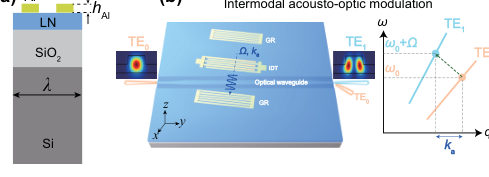

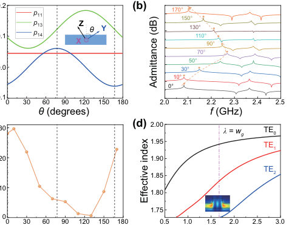
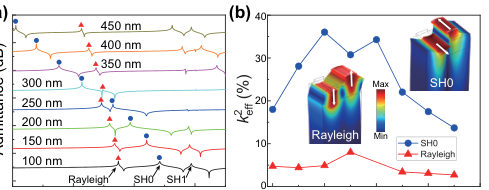
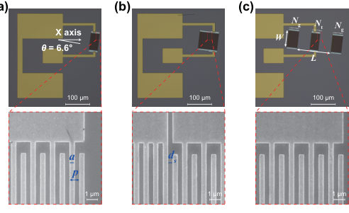
← Index · ← Previous · Next →
Authors: Kento Yasuda, Zhongqiang Xiong, Zhanglin Hou, Kenta Ishimoto, Xinpeng Xu, Shigeyuki Komura
Type: theory · Category: statistical mechanics · PDF: https://arxiv.org/pdf/2606.13617v1
Analysis basis: full PDF text, analyzed in chunks
Topic relevance: Keldysh / 2PI / non-Gaussian methods 1/5 · correlated / nonlocal dissipation 1/5 · driven-dissipative phase transition 1/5 · methods for driven-dissipative 1/5
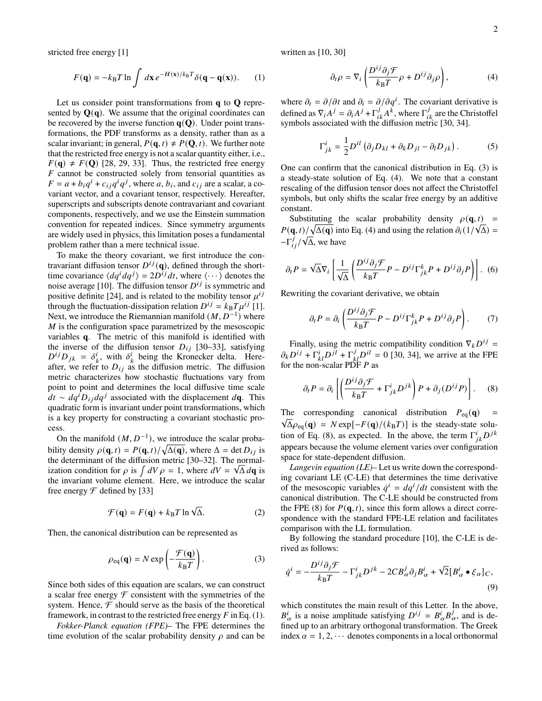
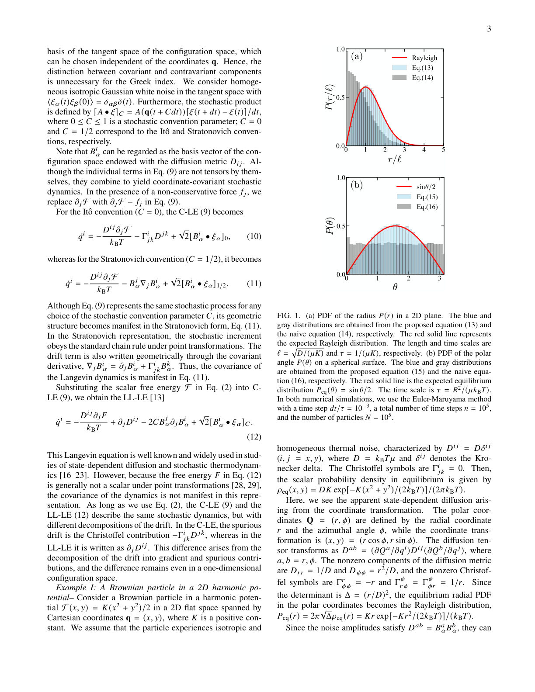
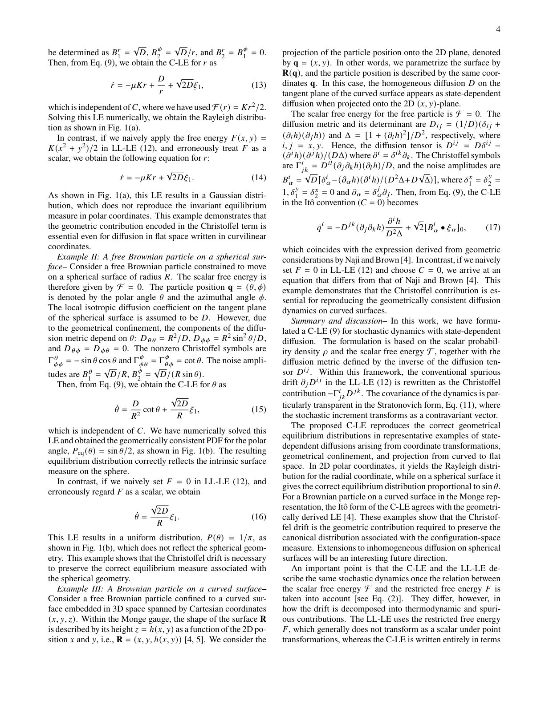
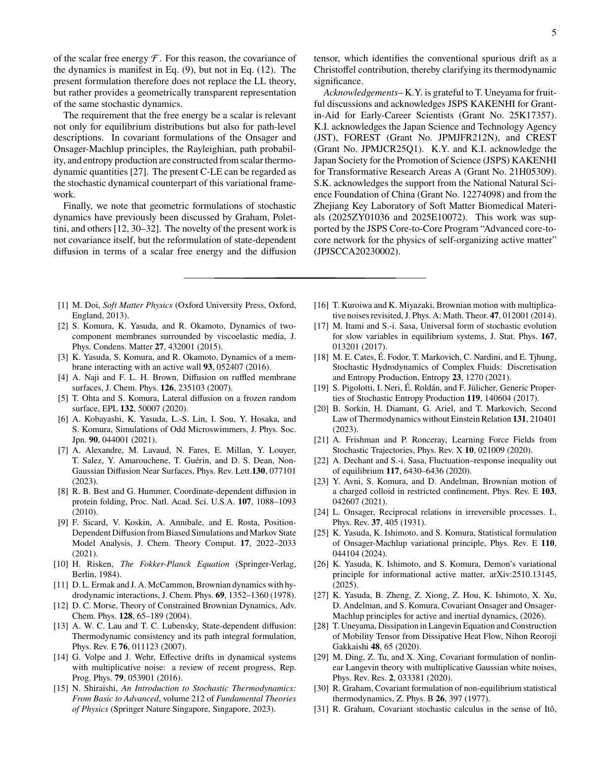
Summary. This paper develops a geometrically consistent framework for describing stochastic motion with state-dependent diffusion by introducing a scalar free energy. It derives a Covariant Langevin Equation (C-LE) that correctly accounts for geometric effects, such as those arising from coordinate changes or curved spaces. This clarifies the physical origin of spurious drift terms within the context of statistical mechanics.
Why it may be interesting. While focused on classical stochastic processes, the rigorous geometric treatment of noise and drift terms has deep parallels with path integrals and fluctuation-dissipation theorems used in quantum open system dynamics.
Main problem. The authors aim to formulate a geometrically consistent Langevin equation for stochastic dynamics involving state-dependent diffusion, addressing issues with spurious drift and non-scalar free energy in conventional formulations.
Main result. They derive a Covariant Langevin Equation (C-LE) that is mathematically equivalent but ensures covariance by utilizing a scalar free energy $F$ and expressing the spurious drift as a Christoffel contribution of the diffusion metric.
Method. The approach involves reformulating the Fokker-Planck equation for an invariant scalar probability density $ ho$, leading to the C-LE, which is then compared against conventional Langevin forms (Itô/Stratonovich) in various geometric settings.
Model / system. The study concerns Brownian motion or general stochastic dynamics in complex physical systems characterized by confinement, anisotropy, and state-dependent diffusion tensors ($D_{ij}$).
Key observables. Equilibrium probability distributions (e.g., Rayleigh distribution on 2D space, $\sin heta$ on a sphere), the form of the Langevin equation itself.
Important parameters / regimes. The diffusion tensor $D_{ij}$, the scalar free energy $F$, and the relationship between Itô/Stratonovich conventions ($C=0$ vs. $C=1/2$).
Assumptions / limitations. The C-LE does not replace existing Langevin-Landau (LL) theory but provides a geometrically transparent alternative representation of the same dynamics.
Figures summary. Figures compare predicted probability density functions (PDFs) for radial and angular distributions derived from the proposed covariant equations versus naive applications, showing agreement with expected physical results.
Paper structure. The paper establishes the problem by noting issues in conventional Langevin formulations; it then derives the C-LE using a scalar free energy $F$; subsequent sections demonstrate its consistency through explicit examples (2D polar coordinates, sphere) where the Christoffel term is crucial for correctness.
Stochastic dynamics with state-dependent diffusion are widely used for Brownian motion in confined, anisotropic, and hydrodynamically coupled systems. The conventional Langevin formulation includes a spurious drift associated with multiplicative noise, but its free energy generally does not transform as a scalar, meaning that the covariance is not explicit. Here, we formulate a geometrically consistent Langevin equation by introducing a scalar free energy and using the diffusion tensor as a metric on configuration space. The spurious drift is then expressed as a Christoffel contribution of the diffusion metric. While our formulation is equivalent to the conventional one through the relation between the non-scalar and scalar free energies, it makes the coordinate covariance explicit. We demonstrate its consistency in representative examples of state-dependent diffusion arising from coordinate transformations, geometrical confinement, and projection from curved to flat spaces.
Authors: Xue Zhang, De-Ran Zhang, Hui Dong
Type: experiment · Category: other · PDF: https://arxiv.org/pdf/2606.12794v1
Analysis basis: full PDF text, analyzed in chunks
Topic relevance: interference shaping light 1/5 · quantum measurements 1/5 · quantum optics experiment 1/5
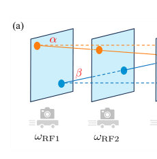
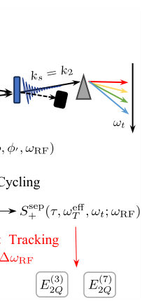
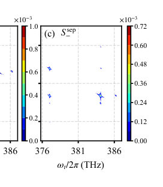
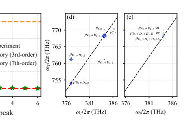
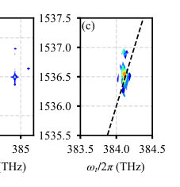
Summary. The paper introduces a novel computational technique combining rotating-frame acquisition and frame-shift tracking to overcome signal overlap issues in 2D spectroscopy. By analyzing distinct frequency shifts associated with different nonlinear orders, the authors successfully isolated a seventh-order quantum coherence signal from background third-order signals in rubidium vapor. This method offers a practical route for studying complex many-body dynamics beyond current experimental limits.
Why it may be interesting. This work provides a powerful, practical methodology for probing complex, non-linear quantum dynamics in atomic systems that are otherwise obscured by spectral overlap, pushing the boundaries of ultrafast spectroscopy.
Main problem. The central challenge is achieving order-selective readout of weak, higher-order nonlinear quantum responses that spectrally overlap with strong lower-order signals in two-dimensional spectroscopy.
Main result. The authors successfully isolated a seventh-order nonlinear coherence contribution from coexisting third-order components using this novel technique. This demonstrates direct access to high-order quantum dynamics beyond the conventional third order.
Method. They employ a computation-assisted strategy combining rotating-frame acquisition with a frame-shift tracking algorithm to separate signals based on their distinct, predictable spectral shifts in different measurement frames.
Model / system. The experiments were conducted using a rubidium vapor system. The technique is designed for general applicability across multidimensional spectroscopy platforms probing many-body and collective ultrafast dynamics.
Key observables. Signal decomposition into $(2n+1)^{th}$-order components, $E^{(2n+1)}_s$, and the measurement of frame-dependent spectral shifts ($\Delta\omega_{eff}^T / \Delta\omega_{RF}$) to determine coherence order.
Important parameters / regimes. The method is effective at high pulse intensities. The analysis relies on specific fully symmetric excitation pathways ($k_s = k_2 \pm n k_1 \mp n k'_1$).
Assumptions / limitations. The primary assumption is that higher-order contributions can be uniquely identified and separated by their distinct, measurable spectral shift slopes when analyzed in rotating frames.
Figures summary. Figures illustrate the frame-shift tracking separation scheme (Fig. 1) and detail the pulse sequences and signal processing procedure used to separate different order signals based on phase matching conditions (Fig. 2).
Paper structure. The paper first establishes the spectral overlap problem in high-order spectroscopy, then introduces the combined rotating-frame/frame-shift tracking method, details its application using rubidium vapor, and concludes by demonstrating the successful isolation of the 7th-order signal.
A central challenge in nonlinear spectroscopy is the order-selective readout of weak higher-order responses that spectrally overlap with dominant lower-order signals. This bottleneck is particularly severe in two-dimensional (2D) spectroscopy, where extending conventional phase-cycling schemes to higher orders rapidly increases measurement and analysis complexity. Here we introduce a computation-assisted strategy that combines rotating-frame acquisition with a frame-shift tracking algorithm to separate signals by their frame-dependent spectral shifts. In a rubidium vapor experiment, we use this approach to isolate a 7th-order nonlinear contribution from coexisting 3rd-order components, enabling direct access to higher-order quantum-coherence dynamics without sacrificing operation at comparatively high pulse intensities. The method is broadly compatible with multidimensional spectroscopy platforms and provides a practical route to probing many-body and collective ultrafast dynamics beyond third order.
Authors: Wenbing Jiang, Xuankai Xu, Yu Guo, Boyu Zhang, Lihui Jin, Xiao Chen, Tao Wu, Libing Zhou
Type: both · Category: other · PDF: https://arxiv.org/pdf/2606.12853v1
Analysis basis: full PDF text, analyzed in chunks
Topic relevance: analog quantum simulation 1/5 · driven-dissipative phase transition 1/5 · interference shaping light 1/5




Summary. This research proposes using overtone shear-horizontal SAW resonators on thin-film lithium niobate for advanced intermodal acousto-optic modulation. By optimizing device geometry, the authors significantly boost the coupling efficiency compared to conventional modes. The fabricated devices demonstrate robust operation at high power levels and exhibit superior temperature stability, making them promising components for integrated optical signal processing.
Why it may be interesting. While the core physics is in acousto-optics/photonics, the focus on high-$Q$, stable resonators operating at defined frequencies (overtones) relates to cavity QED concepts. The ability to engineer mechanical resonances with high precision and stability could be analogous to engineering coupling strengths in quantum optical cavities.
Main problem. The primary goal is developing high-performance intermodal acousto-optic modulators (AOMs) for integrated optical signal processing using thin-film lithium niobate.
Main result. The use of overtone shear-horizontal ($ ext{SH}0$) SAW resonators significantly improves the acousto-optic overlap factor and allows operation at high power levels ($29 ext{ dBm}$) with superior temperature stability compared to Rayleigh modes.
Method. The work combines theoretical modeling (calculating overlap factors, optimizing device parameters) with experimental fabrication and characterization using VNA measurements of admittance and resonance quality factors.
Model / system. The system is based on SAW resonators fabricated on Y-cut thin-film lithium niobate ($ ext{LiNbO}_3$) platforms. The modulation relies on the interaction between an optical mode ($ ext{TE}0$ to $ ext{TE}1$) and the mechanical strain field generated by the Surface Acoustic Waves (SAWs).
Key observables. Electromechanical coupling coefficients ($k_{2 ext{eff}}^2$), Quality factors ($Q$), Acousto-optic overlap factor ($\Gamma_{ao}$), Temperature Coefficient of Frequency ($ ext{TCF}$), and operational power levels.
Important parameters / regimes. Optimal device parameters include the cut angle ($ heta=0^\circ$), SAW wavelength ($\lambda = 1.7 \mu m$), and IDT thickness ($h_{Al} = 150 ext{ nm}$).
Assumptions / limitations. The analysis assumes that $ ext{SH}0$ modes provide superior coupling compared to Rayleigh modes, and the high-order overtone resonances are utilized for enhanced performance.
Figures summary. Figures illustrate cross-sections of the resonators, schematic diagrams of the intermodal AOM process (TE0 to TE1 scattering), and plots showing measured admittance ($|Y|$), resonance quality factors ($Q_s$) vs. power/temperature, and TCF analysis for both $ ext{SH}0$ and Rayleigh modes.
Paper structure. The paper progresses from theoretical optimization of device parameters ($ heta$, $\lambda$, $h_{Al}$) to the physical realization and characterization of overtone resonators using grating reflectors (GRs). The final sections confirm high-power stability, superior TCF performance for $ ext{SH}0$ modes, and overall suitability for integrated AOM applications.
The merits of thin-film surface acoustic wave (SAW) devices are pivotal to develop the high-performance intermodal acousto-optic modulators. In this work, we have proposed shear-horizontal (SH) SAW resonators for anticipated intermodal acousto-optic modulation on the thin-film lithium niobate platform. Through optimization of the cut angle of LN films, the SAW wavelength, and the thickness of interdigital transducer (IDT) electrodes, the calculated acousto-optic overlap factors utilizing SH0 modes are improved by more than an order of magnitude compared with those of Rayleigh modes. Furthermore, we have fabricated and characterized three kinds of proof-of-principle SH0 mode devices without/with grating reflectors. The electromechanical coupling coefficients (keff^2) and quality factors (Q) in the overtone resonators with grating reflectors are systematically evaluated, featuring the highest Q of 843 with the compromised keff^2 of 0.96%-4.72%. The results reveal that the temperature coefficients of frequency (TCF) of Rayleigh modes vary across various overtones, whereas the SH0 modes exhibit TCFs in the range of 32.3-68.9 ppm/C. Our fabricated SH0-mode overtone resonators demonstrate the capability of operating at power levels up to 29 dBm without electrode damage, offering a promising paradigm for robust and high-efficiency intermodal acousto-optic modulators with potential applications in integrated optical signal processing, microwave photonics,and quantum information technologies.
Authors: Cheng Peng, Weiwei Xie
Type: experiment · Category: strongly correlated electrons · PDF: https://arxiv.org/pdf/2606.12727v1
Analysis basis: full PDF text, analyzed in chunks
Topic relevance: Kondo & dissipative impurity 1/5 · analog quantum simulation 1/5 · exotic spin models in light-matter 1/5
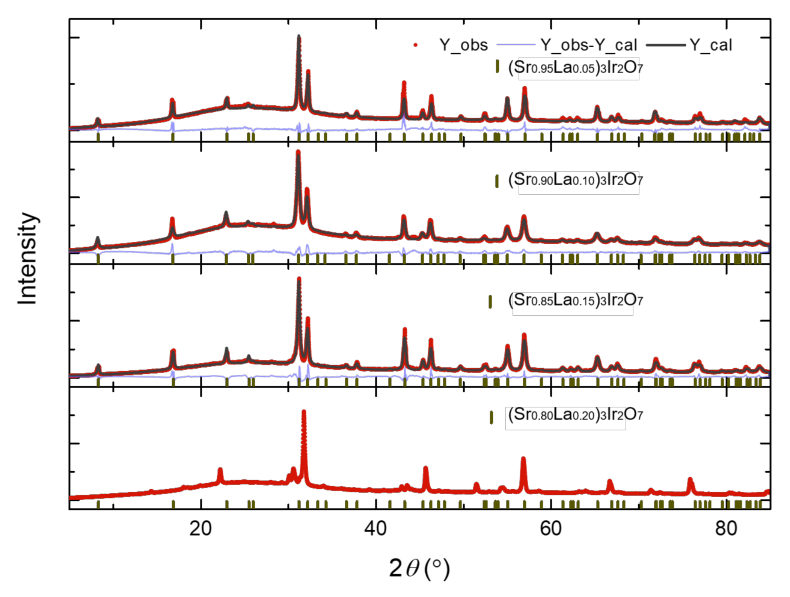
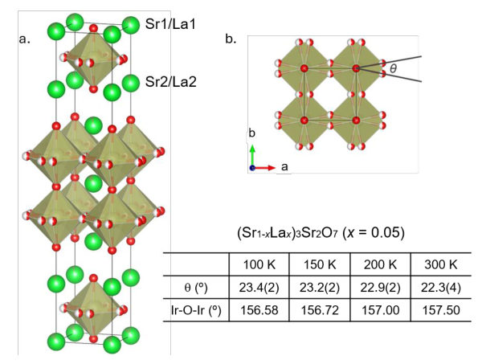
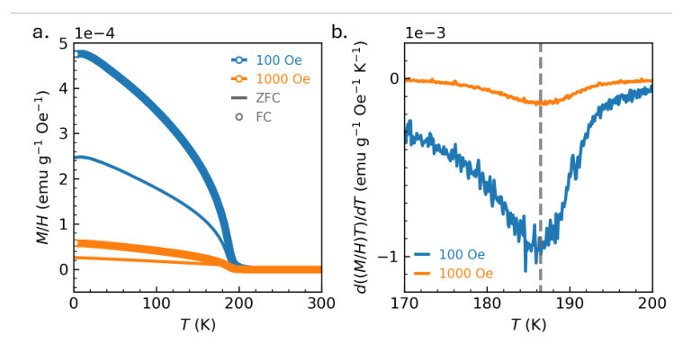
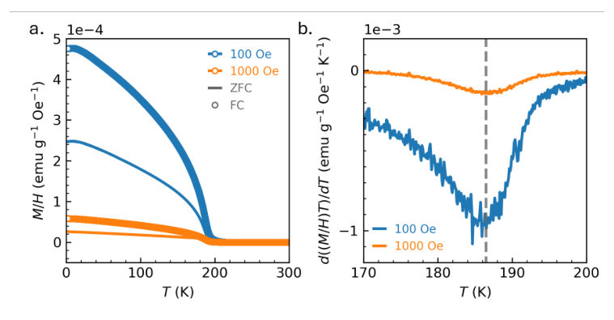
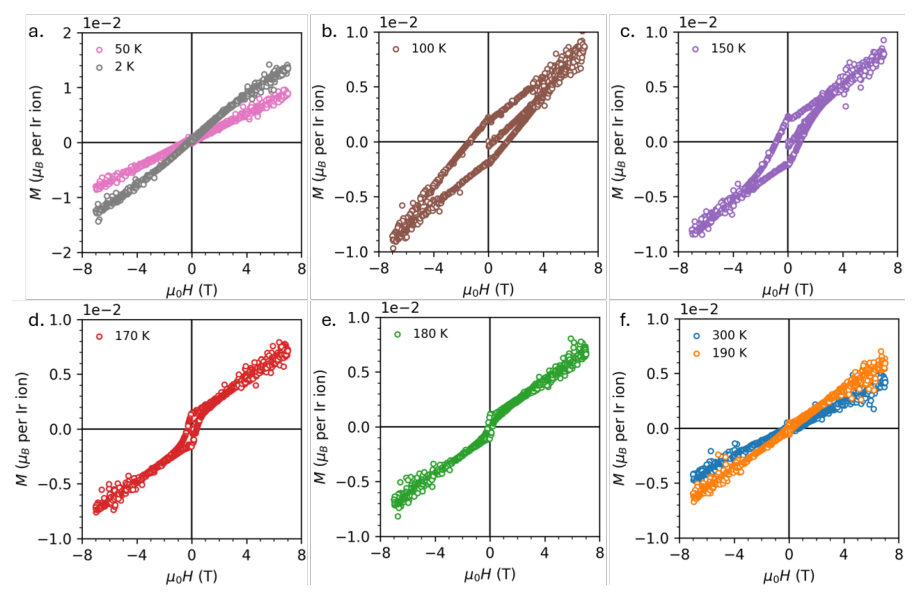
Summary. This work uses high-pressure synthesis to dope $ ext{Sr}_3 ext{Ir}_2 ext{O}_7$ with Lanthanum, extending its solubility limit. By measuring transport and magnetic properties across different doping levels, the authors map out a phase diagram showing a transition from a localized, insulating magnetic state toward more itinerant electronic behavior.
Why it may be interesting. The study directly probes how tuning electron doping (via La substitution) modifies the interplay between magnetic ordering, charge localization, and crystal structure in a strongly correlated Mott insulator system.
Main problem. The study aims to extend the solubility limit of Lanthanum (La) doping in $ ext{Sr}_3 ext{Ir}_2 ext{O}_7$ and characterize the resulting electronic and magnetic phases.
Main result. High-pressure synthesis successfully incorporates higher La concentrations, revealing a transition from a strongly insulating, magnetically ordered state to a more itinerant, metal-like behavior as doping increases.
Method. The research combines high-pressure/high-temperature synthesis with structural characterization (XRD), magnetic measurements ($M(H)$), and electrical transport measurements ($R$ vs $T$).
Model / system. The system is the bilayer iridate $( ext{Sr}_{1-x} ext{La}_x)_3 ext{Ir}_2 ext{O}_7$, which is studied as a platform for investigating spin-orbit-assisted Mott physics under controlled electron doping.
Key observables. Magnetic transition temperature ($\approx 186 ext{ K}$), electrical resistivity, activation energies ($68.40 ext{ meV}$, $82.42 ext{ meV}$), and structural phase transitions (bilayer to cubic perovskite).
Important parameters / regimes. La doping level ($x$), synthesis pressure/temperature ($\sim 6 ext{ GPa}, 1400^\circ ext{C}$), and temperature dependence of electronic/magnetic properties.
Assumptions / limitations. The primary assumption is that high-pressure synthesis allows access to chemical compositions and structural phases inaccessible via ambient synthesis methods.
Figures summary. Figures show PXRD patterns confirming phase purity and structural transformations; transport data illustrate activated conductivity regimes, while magnetization curves reveal field-sensitive magnetic transitions.
Paper structure. The paper progresses by first establishing the necessity of high pressure to dope the material, then characterizing specific doping levels ($x=0.05$ vs $x=0.15$), and finally comparing the electronic/magnetic states across the doping series up to structural collapse at higher concentrations.
La-doped bilayer iridates provide an important platform for studying the evolution of the spin-orbit-assisted Mott state under electron doping, but the La solubility achieved by conventional ambient-pressure synthesis is limited. Here, we report the synthesis and physical properties of nominally La-doped (Sr$_{1-x}$La$_x$)$_3$Ir$_2$O$_7$ (x = 0.05, 0.10, 0.15, and 0.20) prepared using high-pressure high-temperature techniques. Single-crystal X-ray diffraction refinements, supported by scanning electron microscopy-energy-dispersive X-ray spectroscopy (SEM-EDX), reveal significantly enhanced La incorporation, with nominal x = 0.05 and 0.15 corresponding to actual compositions of approximately (Sr$_{0.89}$La$_{0.11}$)$_3$Ir$_2$O$_7$ and (Sr$_{0.77}$La$_{0.23}$)$_3$Ir$_2$O$_7$, respectively. At nominal x = 0.20, the bilayer phase is no longer stabilized and instead transforms into cubic perovskite Sr$_{1-x}$La$_x$IrO$_3$. (Sr$_{0.89}$La$_{0.11}$)$_3$Ir$_2$O$_7$ exhibits a ferromagnetic-like transition near 186 K accompanied by magnetic hysteresis and subtle lattice anomalies indicative of spin-lattice coupling. Despite its high electron-doping level, the compound remains strongly insulating, consistent with a heavily doped localized magnetic insulating state distinct from both parent Sr$_3$Ir$_2$O$_7$ and ambient-pressure La-doped samples. In contrast, (Sr$_{0.77}$La$_{0.23}$)$_3$Ir$_2$O$_7$ displays metal-like electronic behavior, weakened magnetic order, and enhanced carrier delocalization, although disorder-driven localization persists at low temperatures. These results demonstrate that high-pressure synthesis substantially extends the accessible doping range of bilayer iridates and reveals electronic and magnetic states inaccessible through conventional synthesis routes.
Authors: Elijah Lew-Smith, Salvatore D. Pace, Shu-Heng Shao
Type: theory · Category: strongly correlated electrons · PDF: https://arxiv.org/pdf/2606.12510v1
Analysis basis: full PDF text, analyzed in chunks
Topic relevance: Keldysh / 2PI / non-Gaussian methods 1/5 · Kondo & dissipative impurity 1/5 · analog quantum simulation 1/5
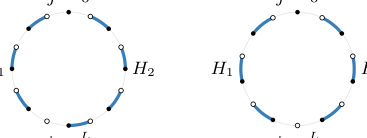
Summary. This paper develops a rigorous framework to analyze lattice chiral anomalies by defining an 'anomaly order.' It shows that while simple lattice models yield finite-order anomalies, imposing lattice CPT symmetry can artificially enhance this order to infinity. This achievement allows the construction of lattice systems whose symmetries more accurately reflect the infinite-order nature of continuum QFT anomalies.
Why it may be interesting. The work directly addresses fundamental questions in condensed matter theory regarding the emergence of continuum symmetries (like chiral anomalies) from discrete lattice Hamiltonians. The mechanism of enhancing anomaly order via CPT symmetry is a powerful theoretical tool for classifying topological phases.
Main problem. The paper investigates lattice chiral anomalies, specifically comparing finite-order anomalies found in simple lattice models to the infinite-order anomalies characteristic of continuum Quantum Field Theories (QFTs). The core goal is to understand how imposing additional symmetries can bridge this gap.
Main result. By enforcing lattice CPT symmetry on the Onsager symmetry, the paper demonstrates that a finite order-two anomaly is enhanced to an infinite order, successfully matching the structure of the continuum chiral anomaly. This provides a mechanism for realizing infinite-order anomalies in lattice systems with finite local Hilbert spaces.
Method. The analysis relies on defining and calculating the 'anomaly order' ($ ext{ord}(\omega)$) by examining the behavior of symmetries under stacking identical copies of the system (the $n$-copy method). It uses symmetry algebra, renormalization group flow concepts, and explicit Hamiltonian constructions for fermionic systems.
Model / system. The primary model involves lattice fermion systems, particularly those exhibiting Onsager symmetry in 1+1d and 2+1d dimensions. The analysis utilizes complex fermions (Majorana representations) and examines Hamiltonians invariant under specific combinations of symmetries like $\mathbb{Z}_2 imes ext{CPT}$.
Key observables. Anomaly order ($ ext{ord}(\omega)$), symmetry groups ($D_8$, Onsager algebra, $\mathbb{Z}_{2} ext{CPT}$), and spectral properties (gapped/gapless spectra).
Important parameters / regimes. The dimensionality of the system (1+1d vs 2+1d) and the specific coupling constants ($g$) determining the Hamiltonian structure.
Assumptions / limitations. The analysis assumes that comparing lattice symmetries to continuum QFTs is valid, and it notes that achieving infinite-order anomalies requires enforcing non-local constraints like CPT symmetry.
Figures summary. Figures illustrate the definition of anomaly order via stacking copies (Figure 1) and show interfaces between different Symmetry Protected Topological (SPT) phases in 2+1d using coupling lines for Majorana fermions.
Paper structure. The paper progresses by first establishing the concept of anomaly order, then analyzing specific lattice examples (like the Onsager symmetry), demonstrating its finite-order anomaly ($ ext{ord}=2$), and finally showing that imposing CPT symmetry elevates this to an infinite order, concluding with discussions on corresponding 2+1d SPT phases.
A key property of a global symmetry's anomaly is its order: the smallest integer $n$ for which the diagonal symmetry of the $n$-copy system is anomaly-free. While many familiar lattice anomalies have finite order, perturbative anomalies in the continuum$-$those captured by Feynman diagrams$-$have infinite order. In this paper, we show that the Onsager symmetry, a lattice realization of the chiral symmetry of a 1+1d massless Dirac fermion, has an order-two anomaly. However, imposing lattice CPT symmetry enhances this anomaly from order two to infinite order, yielding a lattice chiral symmetry structure that more faithfully matches the continuum chiral anomaly. We also discuss the corresponding 2+1d symmetry-protected topological phases for these infinite-order lattice anomalies.
Authors: M. Smith, A. A. Burkov, P. P. Orth, I. Martin, Victor L. Quito
Type: theory · Category: strongly correlated electrons · PDF: https://arxiv.org/pdf/2606.13293v1
Analysis basis: full PDF text, analyzed in chunks
Topic relevance: Keldysh / 2PI / non-Gaussian methods 1/5 · analog quantum simulation 1/5 · spintronics-quantum-optics interface 1/5
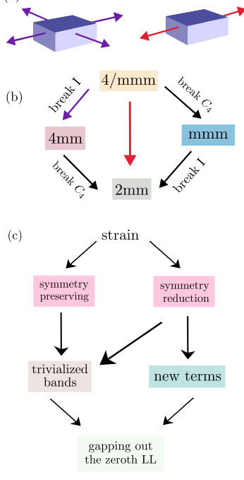
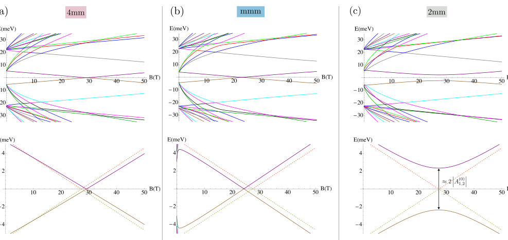
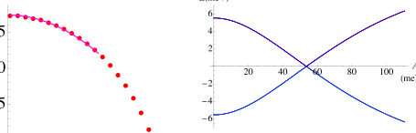
Summary. This theoretical work models strained Cd3As2 thin films using k.p theory to understand their electronic response in magnetic fields. It systematically analyzes how strain dictates the crystal symmetry, which in turn governs whether Landau level crossings are gapped or if a 2D Dirac semimetal phase can emerge. The findings provide powerful diagnostic tools for characterizing topological properties in strained quantum materials.
Why it may be interesting. The detailed coupling between crystal symmetry breaking (strain) and topological electronic properties (Dirac semimetals) is highly relevant to understanding novel quantum materials behavior under external stimuli.
Main problem. The study systematically analyzes how strain profiles and external magnetic fields affect the electronic band structure of strained Cd3As2 thin films.
Main result. The analysis shows that while symmetry breaking can gap out Landau Level crossings, a 2D Dirac semimetal phase can be induced by large in-plane magnetic fields, which is highly sensitive to strain orientation.
Method. Effective k.p models are constructed based on group theory analysis of symmetry reduction under biaxial or uniaxial strain, followed by perturbative calculations involving subband coupling and Landau level quantization.
Model / system. The system is Cd3As2 thin films modeled using effective Hamiltonian Hamiltonians derived from symmetry constraints ($4/mmm o 4mm$, $mmm o 2mm$). The analysis incorporates strain effects ($\delta L/L$) and magnetic fields ($\mathbf{B}$).
Key observables. Gap opening in the lowest Landau level (LLL), emergence of a two-dimensional Dirac semimetal phase, and the critical field dependence ($B_c$) for band crossings.
Important parameters / regimes. Strain profiles (biaxial vs. uniaxial), magnetic field strength ($\mathbf{B}$), film thickness ($L$), and symmetry point groups ($4mm$, $mmm$, $2mm$).
Assumptions / limitations. The analysis relies on constructing effective low-energy k.p models based on underlying point group symmetries, and uses perturbative methods for subband coupling.
Figures summary. Figures illustrate strain profiles and the resulting symmetry reduction of the crystal point group (e.g., $4/mmm$ to $4mm$). Spectra show how LLL crossings behave under different strains and magnetic fields.
Paper structure. The paper proceeds by establishing the general Hamiltonian, systematically analyzing the effect of biaxial and uniaxial strain on symmetry ($C_4$, inversion), deriving effective Hamiltonians for reduced symmetries, and finally examining the consequences of out-of-plane and in-plane magnetic fields on Landau level crossings.
We present a systematic analysis of the behavior of thin films of Cd$_3$As$_2$ under different strain profiles and in magnetic fields. In each case, we construct effective $k \cdot p$ models by considering the reduction of symmetry and all constraints imposed by the remaining symmetries. Our analysis naturally describes both in-plane biaxial and uniaxial strain. Biaxial strain is expected to preserve in-plane $C_4$ rotational symmetry while breaking inversion, allowing for a description in terms of the $4mm$ point group. Uniaxial strain, on the other hand, breaks $C_4$ symmetry. For this case, we consider two scenarios: one preserving inversion, described by the $mmm$ group, and one breaking it, leading to $2mm$ symmetry. After deriving the models, we examine the effects of out-of-plane magnetic fields, identifying two possible microscopic mechanisms that can account for the experimental results reported in Ahadi et al. (2025). Importantly, our analysis proposes a new method for differentiating between them. By incorporating the effects of multiple subbands along the confinement direction, we show that the opening of a gap in the lowest Landau level requires either reducing the symmetry down to $2mm$, breaking both inversion and $C_4$ rotations, or a topological transition of the band structure due to strain-induced band renormalization. Furthermore, we demonstrate that a two-dimensional Dirac semimetal phase can be induced by sufficiently large in-plane magnetic fields. This phase is highly sensitive to different strain profiles, with band touchings occurring when the field is applied perpendicular to preserved mirror planes, serving as a powerful probe of the material's strain profile.
Authors: Simone Fabbri, Leonardo Goller
Type: theory · Category: statistical mechanics · PDF: https://arxiv.org/pdf/2606.13075v1
Analysis basis: full PDF text, analyzed in chunks
Topic relevance: Keldysh / 2PI / non-Gaussian methods 1/5 · analog quantum simulation 1/5
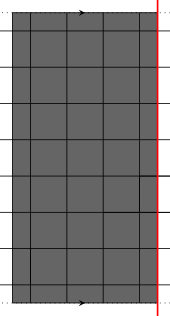
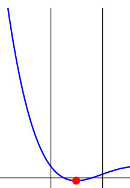
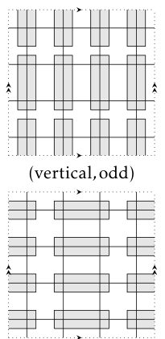
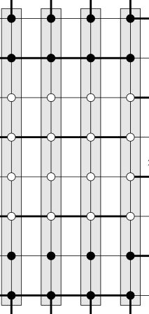
Summary. This paper rigorously proves the existence of Long-Range Order in various lattice formulations of the 2D Gross-Neveu model. It achieves this by transforming the fermionic problem into a bosonic one and applying sophisticated mathematical tools like Reflection Positivity and Peierls arguments. The result provides a non-perturbative validation of chiral symmetry breaking, connecting rigorous lattice theory to mean-field predictions.
Why it may be interesting. While highly technical, the rigorous proof of spontaneous symmetry breaking (LRO) in a lattice field theory like GN is foundational for understanding how quantum fluctuations drive macroscopic order parameters, which has parallels in many-body physics relevant to AMO systems.
Main problem. The central problem is rigorously proving the existence of Long-Range Order (LRO) in lattice regularizations of two-dimensional Euclidean Gross-Neveu models.
Main result. The authors provide a fully rigorous, non-perturbative demonstration of LRO for the chiral fermion bilinear $\langle\psi\psi angle$, establishing a direct link between the continuum theory and its large-$N$ mean-field predictions.
Method. The analysis employs advanced techniques including Hubbard-Stratonovich transformations to map fermionic systems to bosonic ones, followed by using Reflection Positivity, Chessboard Estimates, and Peierls-type contour arguments.
Model / system. The study focuses on three lattice discretizations of the 2D Euclidean Gross-Neveu model: Naive (NN), Staggered (SN), and Staggered Plaquette (SP). These models are used to investigate chiral symmetry breaking and dynamical mass generation.
Key observables. The primary observables include the chirally charged fermion-mass bilinear $\langle\psi\psi angle$ (the order parameter) and the bosonic two-point function, which controls the LRO.
Important parameters / regimes. LRO is proven for sufficiently small coupling constants ($\lambda$) and sufficiently large flavor numbers ($N$). The analysis compares results across different lattice discretizations.
Assumptions / limitations. The proof relies on establishing Reflection Positivity for the resulting bosonic measures, which requires an even number of fermion flavors. The final characterization of infinite-volume states remains a future goal.
Figures summary. Figures illustrate phase distributions of anti-symmetrized forward Dirac operators and graphical representations related to Z2-Gauge Transformations used in the contour arguments.
Paper structure. The paper systematically analyzes three lattice models (NN, SN, SP), establishing key properties of their respective Dirac operators. It then uses the Hubbard-Stratonovich transformation to derive an effective bosonic potential, proving Reflection Positivity and finally applying Peierls/Chessboard estimates to establish LRO.
We prove the existence of Long-Range Order in a class of two-dimensional Euclidean lattice Gross-Neveu models with an even number of fermion flavors, covering three standard lattice discretizations, including naive and staggered fermions widely used in numerical studies. By performing a Hubbard-Stratonovich transformation, we map the fermionic systems to bosonic ones and establish Reflection Positivity for the resulting measures. Exploiting this structure, we combine Chessboard Estimates with a Peierls-type contour argument to prove Long-Range Order for the chirally charged fermion-mass bilinear $\overlineψψ$ at sufficiently small coupling and sufficiently large flavor number. Our analysis is robust with respect to the choice of lattice discretization and applies uniformly across different realizations of the same underlying continuum model. Moreover, we obtain uniform pointwise bounds on the bosonic two-point function, equivalently on the fermionic mass-mass correlator, showing that it is quantitatively controlled by the minimizers of the effective potential. This provides a fully rigorous and non-perturbative demonstration of Long-Range Order in lattice Gross-Neveu models and establishes a direct connection between the rigorous theory and its large-$N$ (mean-field) predictions.
Authors: Michelle Hollricher, Andreas Bauer, Leo Maximov, Louw Feenstra, Christian Pfleiderer, Marc A. Wilde
Type: experiment · Category: strongly correlated electrons · PDF: https://arxiv.org/pdf/2606.12514v1
Analysis basis: full PDF text, analyzed in chunks
Topic relevance: analog quantum simulation 1/5 · quantum measurements 1/5
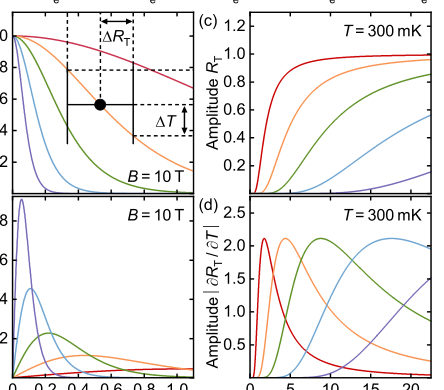
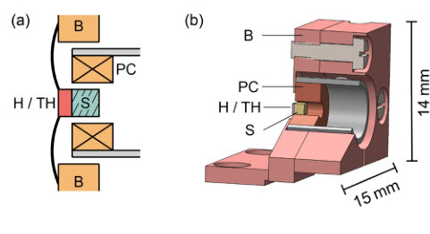
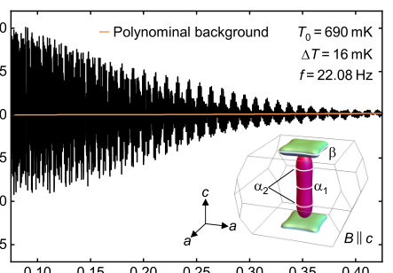
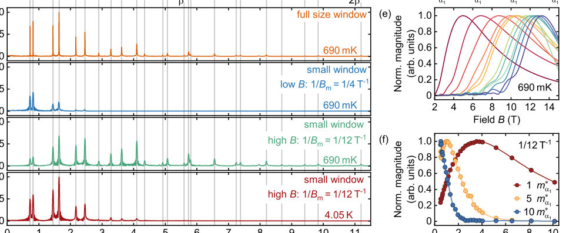
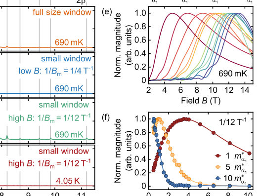
Summary. This work introduces and validates the temperature-modulated de Haas-van Alphen ($ ext{TM-dHvA}$) technique, which measures the temperature derivative of magnetization oscillations. This method overcomes the limitation of overlapping frequency peaks by exploiting the mass-dependent non-monotonic behavior of $\partial M / \partial T$. It successfully demonstrates the independent measurement of heavy and light cyclotron masses in MoSi2, opening a new avenue for studying complex Fermi surfaces.
Why it may be interesting. While focused on solid-state physics, the ability to selectively probe different energy scales or effective parameters ($m^*$) via a derivative measurement technique is analogous to advanced spectroscopic techniques used in AMO physics for characterizing complex quantum states.
Main problem. The primary challenge is selectively measuring quantum oscillations from orbits with widely different effective masses ($m^*$) when their frequency peaks overlap in conventional de Haas-van Alphen (dHvA) measurements.
Main result. The temperature-modulated dHvA ($ ext{TM-dHvA}$) technique successfully achieves cyclotron mass selectivity, allowing the independent extraction of heavy and light orbit contributions even when they are indistinguishable by frequency alone.
Method. The method involves sinusoidally modulating the sample temperature ($T$) and measuring the phase-sensitive voltage signal proportional to $\partial M / \partial T$, leveraging the non-monotonic temperature dependence of the Lifshitz-Kosevich factor.
Model / system. The experiment uses single-crystal compensated topological semimetal MoSi2 as a platform, which naturally exhibits a rich spectrum of quantum oscillations with multiple distinct cyclotron masses ($1 m^*$ to $13 m^*$).
Key observables. Demodulated voltage signal proportional to $\partial M / \partial T$, analyzed via Fast Fourier Transform (FFT) across varying temperatures and magnetic fields.
Important parameters / regimes. Low temperatures ($T < 1 ext{ K}$) enhance the visibility of heavy orbits; the temperature modulation amplitude ($\Delta T$) is crucial for signal detection.
Assumptions / limitations. The technique assumes that the measured oscillation component is proportional to $\partial M / \partial T$, which simplifies analysis by exploiting the temperature derivative of the Lifshitz-Kosevich factor.
Figures summary. Figures illustrate how conventional dHvA struggles with overlapping frequencies, while TM-dHvA clearly separates contributions from heavy and light masses into distinct low-temperature and high-temperature regimes on the $\partial M / \partial T$ signal.
Paper structure. The paper introduces the limitations of standard dHvA measurements, details the temperature modulation technique ($ ext{TM-dHvA}$), presents simulations demonstrating mass separation in principle (using overlapping frequencies), and finally applies this method to experimental data on MoSi2 to extract multiple cyclotron masses.
We present a temperature-modulated de Haas-van Alphen measurement technique that allows selective addressing of quantum oscillations with different effective masses $m^{\ast}$ using a non-monotonic amplitude evolution with temperature and magnetic field, governed by the temperature derivative of the Lifshitz-Kosevich factor. The technique relies on harmonic modulation of the sample temperature and phase-sensitive detection of quantum oscillations in the voltage induced in a pick-up coil. We use a set of frequencies with strong Zeeman-driven harmonic content in the compensated topological semimetal MoSi$_{2}$ as a natural linear mass comb ranging from 1$m^{\ast}$ to 13$m^{\ast}$ to demonstrate the tunability of the mass-dependent quantum oscillation amplitudes experimentally. The technique allows to reliably isolate weak contributions of heavy orbits that are inaccessible in conventional de Haas-van Alphen frequency spectra because their frequency peaks overlap with much stronger frequency peaks of lighter orbits.
Authors: Keita Kanno, Kazumasa Ueno, Hayato Higuchi, Morimasa Okamoto, Yuya Yoshizuru, Ryoya Ishimaru, Towa Takagi, Kentaro Sakamoto
Type: theory · Category: quantum information and computing · PDF: https://arxiv.org/pdf/2606.12770v1
Analysis basis: full PDF text, analyzed in chunks
Topic relevance: methods for driven-dissipative 1/5 · non-equilibrium dynamics 1/5
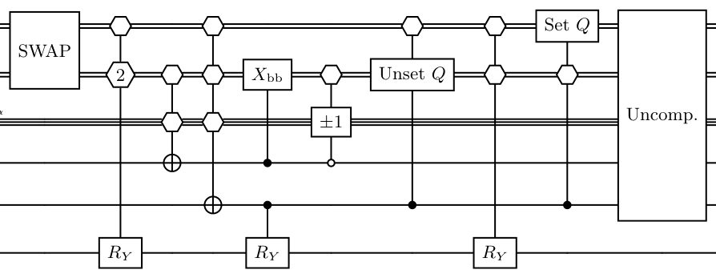
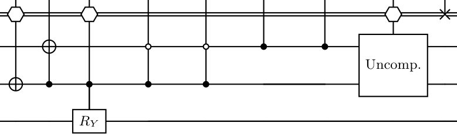
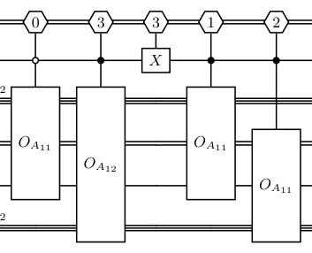
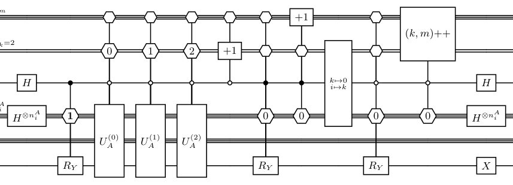
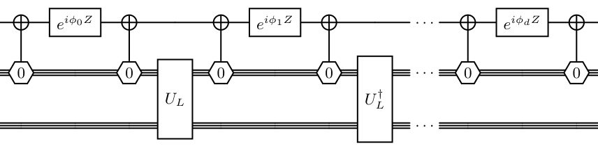
Summary. The paper details the simulation of nonlinear fluid dynamics using an explicit quantum circuit approach. It tackles the nonlinearity by employing Carleman linearization on the Boltzmann equation, transforming it into a solvable linear ODE system. The time evolution is then computed efficiently using Quantum Singular Value Transformation (QSVT), providing detailed complexity analysis for future quantum CFD applications.
Why it may be interesting. This work provides a concrete roadmap for applying advanced quantum algorithms (QSVT) to solve complex, non-equilibrium many-body dynamics problems that are central to condensed matter physics, moving beyond simple linear Hamiltonians.
Main problem. The primary goal is to simulate the complex, nonlinear dynamics of a one-dimensional fluid governed by the Boltzmann equation using quantum computation.
Main result. The authors successfully constructed explicit quantum circuits that encode the time evolution matrix for the linearized system, demonstrating scaling laws and achieving high accuracy compared to classical benchmarks.
Method. The approach combines Carleman linearization of the nonlinear Boltzmann equation into a linear ODE, which is then solved using a Taylor expansion-based Ordinary Differential Equation (ODE) solver implemented via Quantum Singular Value Transformation (QSVT).
Model / system. The system models a 1D fluid dynamics problem, utilizing the Lattice Boltzmann Method framework. The nonlinearity is handled by approximating $1/ ho$ and linearizing the resulting ODE using Carleman expansion up to second or third order.
Key observables. Gate and qubit complexities (scaling logarithmically with grid size), effective condition number $\kappa(L)$, and pointwise residual error compared to the continuous BGK reference solution.
Important parameters / regimes. Grid size ($N_x$), time steps ($N_t$), Carleman truncation order ($N_C=2, 3$), and Taylor expansion order ($N_K$).
Assumptions / limitations. The core assumptions involve the validity of the Taylor approximation for $1/ ho$ around $ ho=1$, and the convergence properties of the Carleman linearization method.
Figures summary. Figures illustrate the block-encoding quantum circuit structures ($O_{A11}, O_{A12}$), the general time-evolution matrix structure ($U_L$), and various error analyses comparing simulation results against classical reference solutions across different truncation orders.
Paper structure. The paper systematically builds the quantum simulation by first linearizing the nonlinear PDE (Carleman method), then discretizing the resulting ODE into a matrix form, and finally implementing the time evolution operator using block-encoded oracles within QSVT circuits.
Quantum computation of fluid dynamics has attracted growing attention as a key application of fault-tolerant quantum computers anticipated in the coming decade, with lattice Boltzmann methods emerging as a particularly promising approach. Explicit and efficient elementary-gate-level circuit simulations, however, have so far been demonstrated only in the linear case. Here we include the leading nonlinearity through second-order Carleman linearization of the one-dimensional Boltzmann equation, and demonstrate, via explicit quantum-circuit simulation, the preparation of the final-time state using a Taylor-expansion-based ODE solver based on the quantum singular value transformation. With this construction, we analyze the gate and qubit complexities, which scale logarithmically with the grid size, the nonlinearity captured by the higher-order Carleman linearization, and the practical utility of higher-order expansions in the Taylor ODE solver. The construction provides a concrete baseline for computational cost reduction and further developments such as extensions to higher dimensions, complex geometries, and the extraction of physical quantities, towards industrially useful quantum CFD.
Authors: Yash Vardhan Tomar, Dheeraj Peddireddy, Vaneet Aggarwal
Type: both · Category: quantum information and computing · PDF: https://arxiv.org/pdf/2606.12816v1
Analysis basis: full PDF text, analyzed in chunks
Topic relevance: QC/QI experiment 1/5 · methods for driven-dissipative 1/5
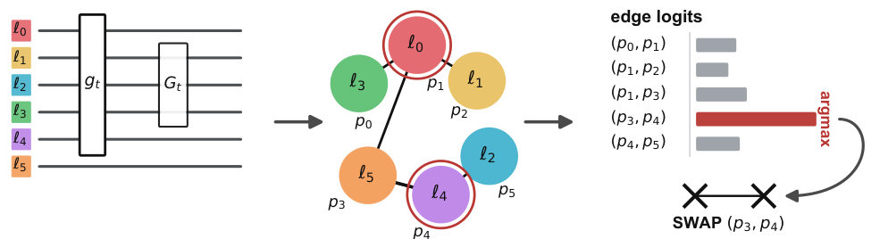
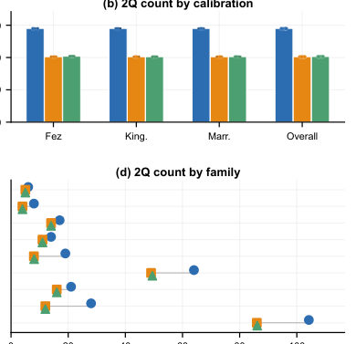
Summary. The paper proposes using graph reinforcement learning to optimize quantum circuit routing on noisy quantum processors. By incorporating real-time calibration data, the learned router selects paths that maximize fidelity rather than just minimizing gate count. This demonstrates that intelligence derived from hardware characterization can yield significant performance gains over traditional compilation methods.
Why it may be interesting. This work directly addresses the practical gap between theoretical quantum algorithms and noisy physical hardware by integrating machine learning into the compilation stack, which is crucial for advancing NISQ applications.
Main problem. Quantum circuit routing for NISQ devices is challenged by hardware imperfections, as standard metrics fail to account for varying coupler error rates across different paths.
Main result. A calibration-aware graph reinforcement learning router achieved a pooled mean exact fidelity of 0.727, significantly outperforming established baselines like SABRE-best20 (0.440).
Method. The authors trained an RL agent using Proximal Policy Optimization (PPO) to select hardware SWAPs based on real-time calibration data.
Model / system. The work simulates quantum computation on NISQ processors, modeling the environment as a calibrated backend graph incorporating readout and two-qubit error rates from same-day calibration snapshots.
Key observables. Exact simulated state fidelity ($\mathcal{F}$), routed two-qubit count ($g_{2Q}$), and circuit depth are tracked against established baselines.
Important parameters / regimes. The performance is sensitive to the size of the circuit (5q vs 10q) and the availability of alternative, high-fidelity routing paths.
Assumptions / limitations. The comparison relies on reproducible SABRE-family baselines due to differing evaluation harnesses; furthermore, fixed action graphs limit optimal path exploration for larger circuits.
Figures summary. Figure 1 illustrates how circuit inputs and calibration data are encoded into a graph structure for the RL router. Table II quantifies fidelity gains versus added two-qubit gates compared to SABRE-best20.
Paper structure. The paper introduces the problem of hardware-aware routing, details the RL formulation (state, action, reward using PPO), presents the methodology using calibration data for training, and concludes with comparative results against state-of-the-art benchmarks.
Quantum circuit routing is a key step in compiling programs for noisy intermediate-scale quantum processors. Routes that appear efficient by standard overhead metrics can still lose fidelity when they pass through poorly calibrated couplers. We study a calibration-aware graph reinforcement-learning router that uses same-day IBM Heron r2 calibration data to choose hardware-edge SWAPs. We train the policy with proximal policy optimization and evaluate it with exact simulated fidelity across nine Munich Quantum Toolkit (MQT) Bench circuits and three calibration snapshots. Across these evaluations, pooled mean exact fidelity is $0.727$, compared with $0.440$ for SABRE-best20 and $0.481$ for target-aware SABRE. Fidelity gains come with higher routed two-qubit counts and are concentrated in the 5q and 8q circuit families; under the fixed tree action graph, all 10q families favor SABRE-best20. Overall, our results show that calibration-aware learned routing can improve fidelity beyond gate-count-driven compilation.
Authors: Aastha Kataria, Devansh Desai, Ashwini Dalvi, Sagar Korde, Abhijeet Pasi, Irfan N A Siddavatam, Sudhir Ranjan Jain
Type: both · Category: quantum information and computing · PDF: https://arxiv.org/pdf/2606.13034v1
Analysis basis: full PDF text, analyzed in chunks
Topic relevance: entanglement & information structure 1/5
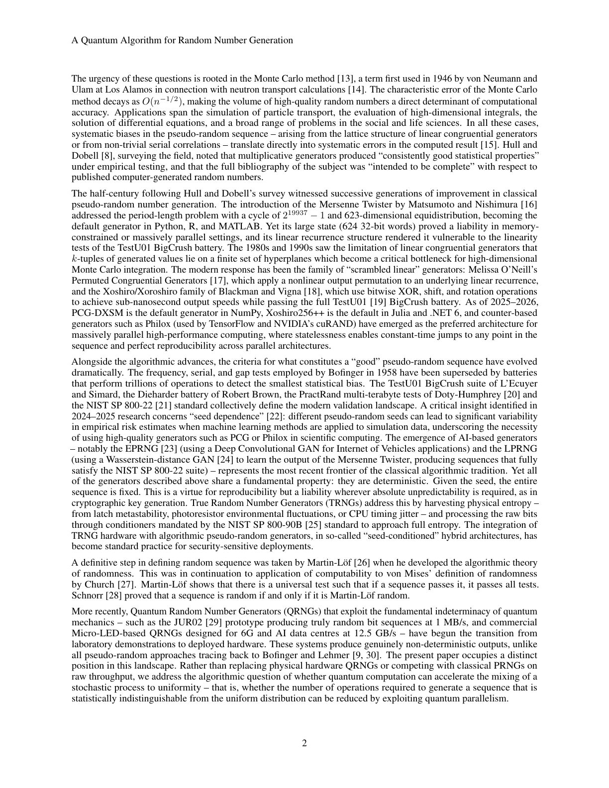
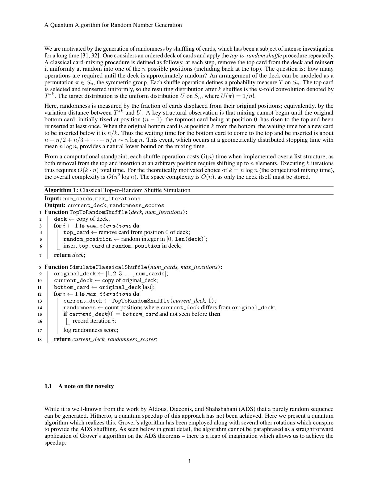
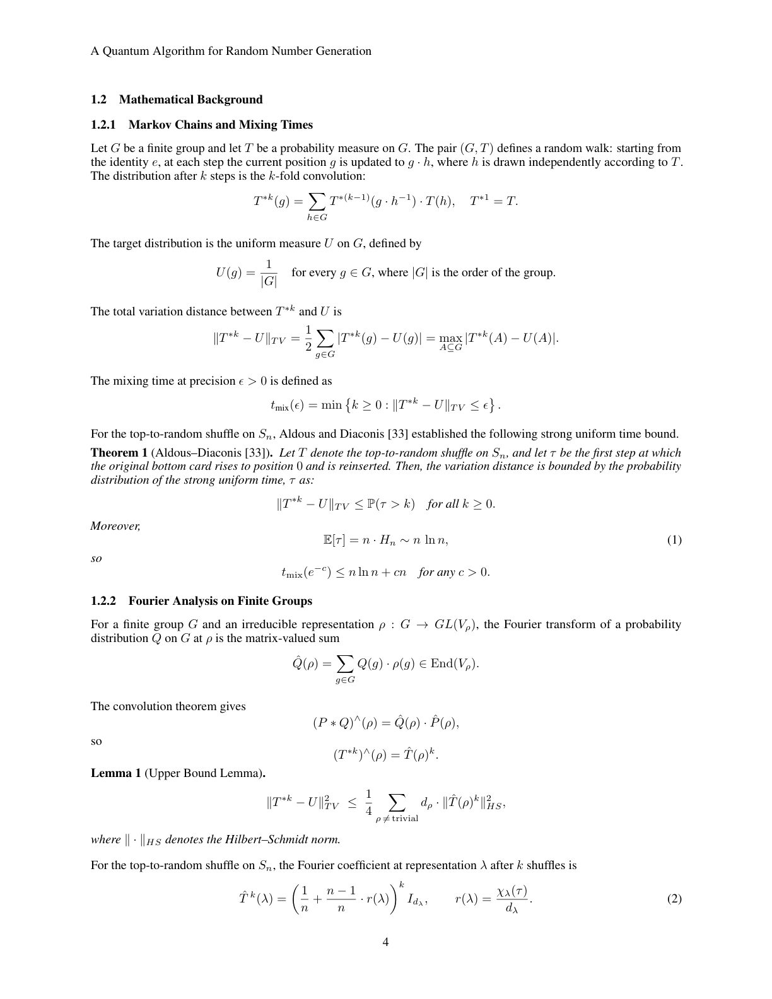
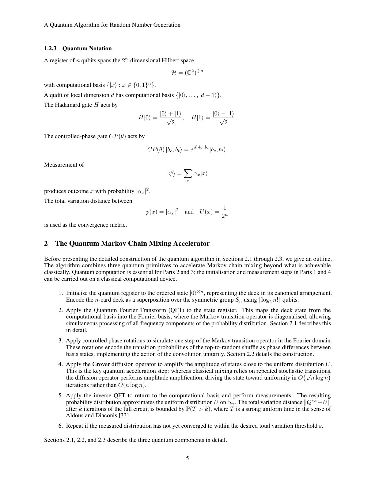
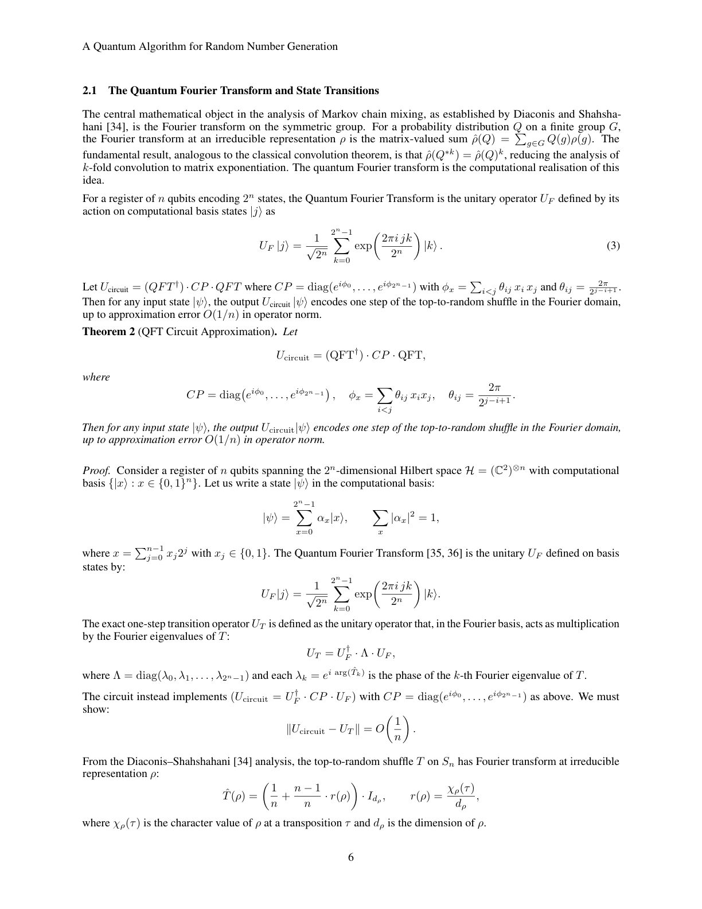
Summary. This work presents a novel quantum algorithm for generating random numbers by simulating the mixing process of a card shuffle. It achieves a provable quadratic speedup over classical methods by utilizing qudits and combining QFT with Grover diffusion. The results are validated both theoretically and experimentally on superconducting hardware.
Why it may be interesting. It provides a concrete example of applying advanced quantum algorithms (QFT, Grover diffusion) to solve a fundamental problem in information theory—randomness generation—with complexity scaling that surpasses classical limits.
Main problem. The paper develops a quantum algorithm for random number generation by accelerating the mixing time of a Markov process, specifically simulating the top-to-random card shuffle.
Main result. The proposed qudit formulation achieves a significantly faster convergence rate, with a total gate complexity scaling as $O(\sqrt{\log_d N})$, demonstrating a provable quadratic speedup over classical simulation bounds.
Method. The algorithm integrates the Quantum Fourier Transform (QFT), controlled phase rotations encoding Markov eigenvalues, and a Grover diffusion operator to simulate the mixing process in the quantum domain.
Model / system. The system is modeled by random walks on the symmetric group $S_n$, using both qubit ($n$-qubit) and qudit ($m$ qudits of dimension $d$) encodings. The simulation targets achieving a state distribution close to uniform randomness.
Key observables. Total Variation Distance ($\lVert Q_k - U Vert_{ ext{TV}}$), mixing time, peak probability ($p_{ ext{max}}$), and rejection rate.
Important parameters / regimes. The state space dimension $N=d^m$, the number of qubits $n$, and the local qudit dimension $d$.
Assumptions / limitations. The analysis relies on approximating the exact unitary evolution with a circuit, and the final output extraction methods must be carefully applied to maintain randomness.
Figures summary. Figures illustrate the decay of the Total Variation Distance ($d_k$) for both qubit and qudit implementations across multiple mixing layers, showing rapid convergence towards uniformity.
Paper structure. The paper progresses from establishing the classical lower bound on mixing time, to developing the quantum circuit using QFT/controlled phases, generalizing this to an efficient qudit formulation, and finally validating the algorithm through both theoretical analysis and experimental implementation on superconducting hardware.
We present a quantum algorithm for random number generation that achieves a provable quadratic speedup over classical Markov chain mixing, building on the Diaconis-Shahshahani Fourier analysis of the top-to-random card shuffle. The algorithm integrates three quantum primitives into a unified mixing circuit: the Quantum Fourier Transform (QFT), which diagonalizes the Markov transition operator; controlled phase rotations, which encode the shuffle eigenvalue spectrum; and the Grover diffusion operator, which acts as a quantum analogue of the Aldous-Diaconis strong uniform stopping time by reflecting amplitudes about their mean at each iteration. For an n-qubit register, the mixing time is O(\sqrt{n \log n}) iterations. Extending to m qudits of local dimension d reduces this to O(\sqrt{\log_d N}) iterations, where N = d^m, compared to the classical O(n \log n) bound. The qudit formulation further reduces QFT circuit depth from O(\log^2 N) to O(\log_d^2 N) gates per layer by encoding the same N-state space using m = \log_d N subsystems instead of \log_2 N qubits. We validate both variants on IBM superconducting hardware.
Authors: Pauli Taipale
Type: both · Category: quantum information and computing · PDF: https://arxiv.org/pdf/2606.13244v1
Analysis basis: full PDF text, analyzed in chunks
Topic relevance: QC/QI experiment 1/5
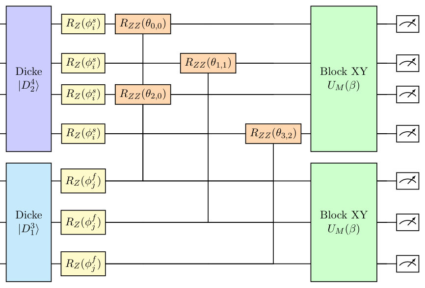
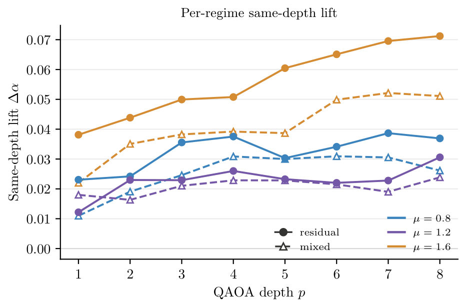
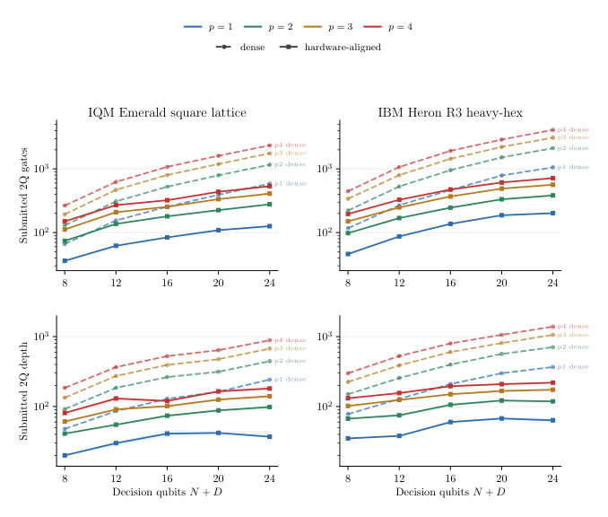
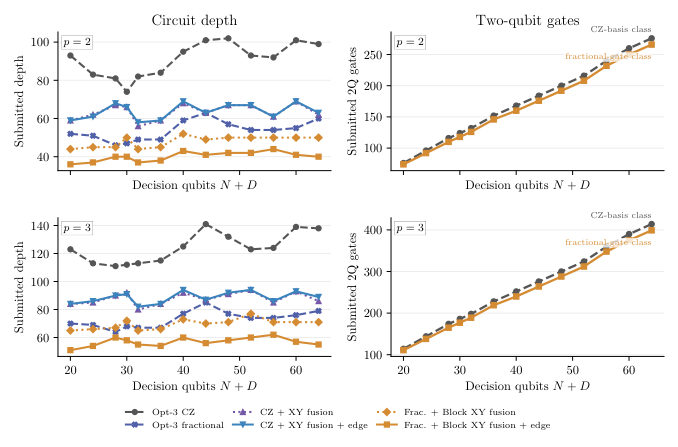
Summary. The paper tackles joint anomaly and feature selection by formulating it as a constrained optimization problem solvable via QAOA. It introduces Coupling-Grouped XY-QAOA, a specialized quantum circuit variant that maintains strict budget constraints while significantly reducing required quantum resources on real hardware. The results validate the method's effectiveness for large-scale, resource-limited quantum computation.
Why it may be interesting. This work provides a concrete, resource-aware quantum algorithm implementation (CG-XY-QAOA) for a highly relevant data science problem (anomaly detection), directly addressing the practical challenges of mapping complex constraints onto near-term NISQ hardware.
Main problem. The paper addresses joint anomaly-feature selection, a constrained optimization problem that is superior to sequential feature-first methods because it accounts for the mutual dependence between selected samples and features.
Main result. The proposed Coupling-Grouped XY-QAOA method achieves significant hardware resource reductions (up to 61.3% depth reduction) on IBM Heron R3, demonstrating feasibility for large-scale constrained bipartite selection problems.
Method. It formulates the problem as a QUBO/Ising model and optimizes it using a specialized QAOA variant called Coupling-Grouped XY-QAOA (CG-XY-QAOA), which is designed to preserve exact cardinality constraints on quantum hardware.
Model / system. The optimization targets selecting subsets of anomalous samples ($S$) and explanatory features ($F$) subject to fixed budgets ($k, m$). The physical platform is the IBM Heron R3 superconducting qubit processor, utilizing a constrained-mixer QAOA ansatz.
Key observables. Circuit depth reduction (45.9%-61.3%), two-qubit gate reduction (2.6%-5.2%), feasibility retention rates at high qubit counts (e.g., 64 qubits at p=2), and the objective energy gap relative to classical references.
Important parameters / regimes. Fixed budgets $k$ and $m$; QAOA depth parameter $p$; hardware connectivity constraints; weight balancing parameter $ ho$.
Assumptions / limitations. The method assumes that the problem can be accurately mapped to a QUBO Hamiltonian, and it relies on specific hardware-aware ansatzes (like Block XY mixer) to enforce budget constraints without penalty terms.
Figures summary. Figures illustrate circuit structures for different QAOA variants (e.g., tensor-Dicke initialization), resource scaling sweeps across qubit counts, and comparisons of performance metrics like BK hit rates and energy gaps between grouped vs. tied scheduling.
Paper structure. The paper progresses from establishing the theoretical necessity of joint selection over sequential methods, deriving the constrained QUBO Hamiltonian, proposing the CG-XY-QAOA ansatz for constraint preservation, and finally validating this approach through extensive benchmarking on IBM Heron R3 hardware across varying qubit counts and depths.
Selecting anomalous samples and explanatory features under fixed budgets defines a coupled constrained-optimization problem. Sequential feature-first selection ranks features before choosing samples, which can overlook features whose utility depends on which samples are selected, especially when scores are calibrated from reference data that may be limited, noisy, or drifting. We instead formulate the task as joint sample-feature selection under the same fixed counts. In the analyzed formal model, calibration-error sensitivity grows linearly with the number of samples for feature-first ordering but stays constant for joint selection. We introduce Coupling-Grouped XY-QAOA, a constraint-preserving grouped-angle variant for the resulting optimization problem. On matched sparse IBM Heron R3 benchmarks, a hardware-aware implementation reduces circuit depth by 45.9%-61.3% and two-qubit gates by 2.6%-5.2% relative to Qiskit optimization level 3 on the CZ-basis target. It enables, to our knowledge, the largest reported width-depth configurations for constraint-preserving bipartite-selection QAOA hardware executions with feasible-sector retention: 64 qubits at p=2 and 36 qubits at p=3. The 20-qubit p=5 runs retain 63% valid samples. Across 36-64 qubits, fixed-angle runs yield lower-energy feasible samples than matched random-feasible sampling. Warm starts reduce the gap to strict-feasible classical references by 57.5%-80.5%, and near-budget repair matches the sparse classical reference at 36 qubits. Benchmarks show gains in balanced fixed-budget regimes, and noiseless simulations show that problem-structured angle grouping improves over same-depth XY-QAOA and matched-parameter, type-preserving randomization controls. Overall, the results support calibrated joint selection and hardware-realizable constrained-mixer execution in the tested regimes.
Authors: Chetana Badala Viswanatha, Ka Man Yu, Benito Arnoldi, Anagha Aravind, Aaruni Kaushik, Jannis Lessmeister, Martin Aeschlimann, Benjamin Stadtmüller, S. Harshini Tekur
Type: both · Category: disordered systems and neural networks · PDF: https://arxiv.org/pdf/2606.13144v1
Analysis basis: full PDF text, analyzed in chunks
Topic relevance: methods for driven-dissipative 1/5
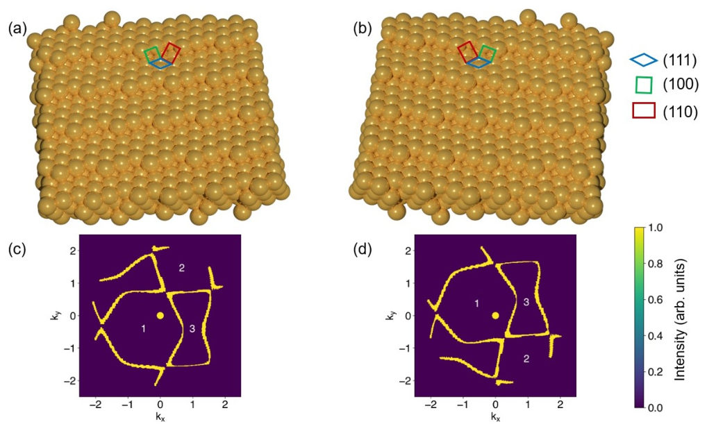
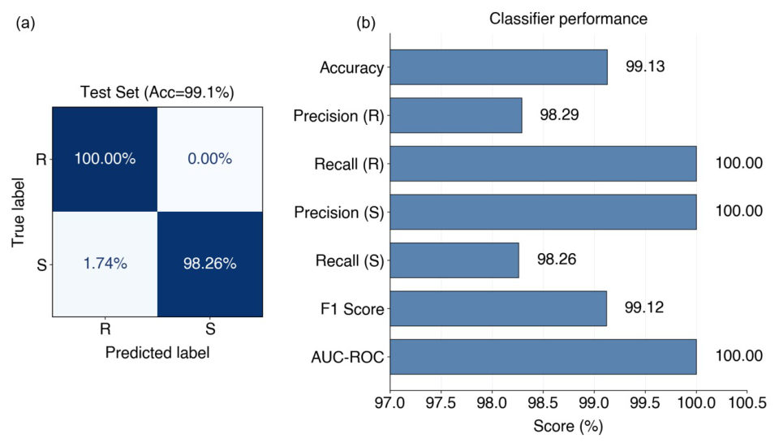
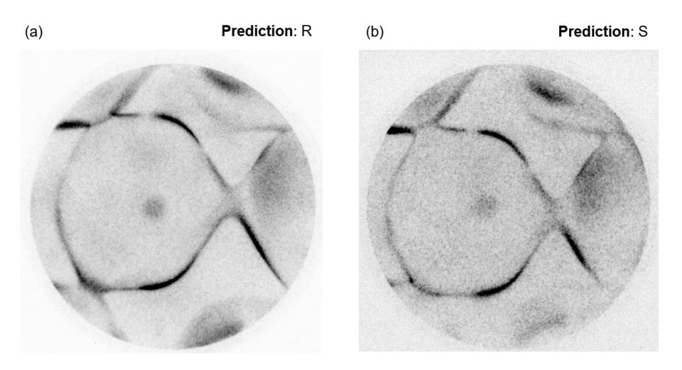
Summary. This work introduces a machine learning framework to determine the handedness of chiral metal surfaces by analyzing two types of images: real-space atomic models and reciprocal-space Fermi surface maps. The authors found that classifying chirality from ARPES data is significantly more accurate than using local atomic geometry, suggesting that global electronic patterns are superior diagnostics for intrinsic material properties.
Why it may be interesting. The application of deep learning to extract fundamental topological invariants (chirality) from complex electronic band structure maps is highly relevant. The finding that momentum space provides a more robust signature than local atomic geometry has implications for understanding disorder resilience in quantum phenomena like CISS.
Main problem. The core problem is developing a reliable method to classify the handedness (chirality) of intrinsically chiral metal surfaces from experimental observables.
Main result. A dual-domain machine learning framework successfully decodes surface chirality, showing that electronic structure maps (ARPES/momentum space) provide significantly more robust classification ($\sim 99\%$) than local atomic geometry models ($\sim 73\%$).
Method. The authors employed a deep convolutional neural network (ResNet18) trained on two distinct image representations: simulated real-space atomic structures and momentum-resolved photoemission maps from the Fermi surface.
Model / system. The physical system involves high-Miller-index planes of FCC metals exhibiting geometric chirality due to asymmetric step-kink-terrace topology. The analysis is performed using both atomic structure models (real space) and simulated/experimental Angle-Resolved Photoemission Spectroscopy (ARPES) maps (reciprocal space).
Key observables. Chirality label ($ ext{R}$ or $ ext{S}$), classification accuracy, Fermi surface polygon orientation relative to the surface normal.
Important parameters / regimes. Photon energy ($21.2\ ext{eV}$ in simulations; $30\ ext{eV}$ experimentally); Classification metrics (Accuracy, AUC-ROC).
Assumptions / limitations. The primary assumption is that chirality is encoded differently—locally vs. globally—in the two representations, and that ML can learn this topological invariant from image data.
Figures summary. Figures illustrate representative R/S atomic models alongside their corresponding simulated ARPES Fermi surface projections, demonstrating how mirror symmetry breaking manifests in both domains for classification training.
Paper structure. The paper follows a systematic pipeline: defining the physical problem (chirality detection), generating synthetic data for both real-space and reciprocal-space representations, training separate ResNet18 classifiers on each domain, and finally testing the superior performance of the reciprocal-space classifier on challenging experimental ARPES images.
Intrinsically chiral metal surfaces, where handedness arises from the asymmetric step-kink-terrace topology of high-Miller-index planes, are model systems for enantiospecific catalysis, sensing, and spintronics. Yet, no consistent method exists to classify their handedness directly from experimental observables. We report a dual-domain machine learning framework that decodes crystallographic surface chirality from two independent image representations: atomic structure models in real space and simulated momentum-resolved photoemission maps of the Fermi surface projections in reciprocal space. ResNet18, a deep convolutional neural network, fine-tuned on a database of labeled images achieves ~73% classification accuracy on atomic models and ~99% on Fermi surface projections. We show that the latter transfers directly to synchrotron-acquired experimental images after fine-tuning on just two labeled frames. We identify a working correspondence between the two representations: just as the kink site geometry fixes the orientation of crystallographic planes in real space, the surface normal position in a momentum-resolved photoemission map anchors the orientation of the Fermi surface polygons in reciprocal space. It is precisely this relative orientation that encodes handedness into the map topology with high accuracy. The pronounced difference in accuracy shows that handedness is more readily recovered from the momentum-space electronic pattern than from the local atomic geometry of the kinked surface. This finding has direct implications for the disorder resilience of geometric chiral-induced spin selectivity (CISS) at realistic metal surfaces.
Authors: Shih-Kuang, Lee, Sun-Ting Tsai, Sharon C. Glotzer
Type: theory · Category: statistical mechanics · PDF: https://arxiv.org/pdf/2606.13586v1
Analysis basis: full PDF text, analyzed in chunks
Topic relevance: methods for driven-dissipative 1/5
Summary. This paper introduces Exploratory Digital Alchemy (EDA), an advanced simulation technique that enhances existing inverse design methods by incorporating Metadynamics principles. EDA allows researchers to explore the full range of potential self-assembled structures in colloidal systems without needing to know the target crystal structure beforehand. By applying this to LJGP and OPP potentials, the authors successfully map out complex free energy landscapes, revealing multiple stable and metastable phases.
Why it may be interesting. The methodology of enhancing statistical sampling techniques (MetaD) for materials design is highly relevant. It provides a computational framework applicable to complex many-body systems where the energy landscape is unknown or multi-modal, bridging simulation theory with physical discovery.
Main problem. The primary goal is to develop an enhanced forward design scheme to discover novel, stable self-assembled colloidal structures by overcoming the limitation of existing inverse design methods.
Main result. The proposed Exploratory Digital Alchemy (EDA) successfully explores broad potential energy landscapes, identifying multiple coexisting and metastable crystal phases for given particle interaction potentials.
Method. EDA enhances Digital Alchemy (DA) by integrating a Metadynamics-like bias potential into the generalized ensemble framework, allowing unbiased exploration of the design space.
Model / system. The study models colloidal particles interacting via specific pair potentials: a 2D Lennard-Jones Gauss Potential (LJGP) and a 3D Oscillating Pair Potential (OPP). The analysis focuses on mapping the Free Energy Surface (FES) as a function of potential parameters.
Key observables. Free Energy Landscape ($\Phi$), crystal structures identified via Minkowski Structure Metric (MSM), and stability ranges for different phases (e.g., square vs. hexagonal lattices).
Important parameters / regimes. Alchemical parameters ($\alpha$, such as $r_0$ or $\phi$), temperature ($k_B T$), and the bias potential parameters used in Metadynamics.
Assumptions / limitations. The approach assumes that combining DA with MetaD's self-exploration mechanics can effectively map complex, multi-modal free energy landscapes without needing a predefined target structure.
Figures summary. Figures illustrate the conceptual shift from constrained DA to exploratory EDA (Fig. 1), show potential energy profiles correlating stability with parameters (Fig. 2 for LJGP), and display FES maps revealing multiple stable/metastable phases across varying potentials (Fig. 3, Fig. 5).
Paper structure. The paper introduces the limitations of DA, proposes EDA as an enhancement using Metadynamics bias accumulation, details its application to both LJGP (2D) and OPP (3D) systems, presents results showing phase identification across parameter space, and concludes by validating the method's ability to map metastability.
Digital Alchemy (DA), introduced by Van Anders et al., is a statistical mechanics-based generalized thermodynamic ensemble method that employs computer simulations to optimize colloidal particle design. This approach applies the principles of statistical mechanics to predict and tailor particle attributes that lead to desired self-assembled structures or material properties. However, as an inverse design method, its main limitation is that the target structure must be known \textit{a priori}. Therefore, the optimal design from DA does not guarantee the targeted structure is the most or the only stable one. This highlights the importance of forward design with an exploratory scheme for optimizing novel colloid designs, which becomes more suitable in such cases. In this paper, we introduce Exploratory Digital Alchemy (EDA), an enhanced forward design scheme that begins by releasing the constraint of the target crystal from DA, followed by an exploration-oriented bias that has been extensively used in enhanced sampling methods such as metadynamics (MetaD). We demonstrate the utility of EDA through examples involving particles interacting via a two-dimensional Lennard-Jones Gauss potential (LJGP) and a three-dimensional oscillating pair potential (OPP). We applied EDA to study the free energy landscapes given different potential parameters of LJGP at different temperatures. With the exploratory scheme, we've also successfully identified a wide range of OPP potential parameters that stabilize metastable Frank-Kasper phases. Our approach fuses the standard DA framework with metadynamics, which could potentially be useful for studying alchemical reactions in a generalized ensemble.
Authors: Marcia Tenser, Amilcar R. Queiroz
Type: theory · Category: other · PDF: https://arxiv.org/pdf/2606.13388v1
Analysis basis: full PDF text, analyzed in chunks
Topic relevance: analog quantum simulation 1/5
Summary. This paper analyzes the quantum mechanics of Yang-Mills theory coupled to a charged particle on a cylinder. By rigorously applying gauge constraints and transforming the Hamiltonian, the authors demonstrate that the resulting system maps precisely onto the Calogero-Sutherland model for SU(N). This establishes a profound link between non-Abelian gauge theories and exactly solvable integrable quantum systems.
Why it may be interesting. The deep connection established between a fundamental gauge theory (Yang-Mills) and an exactly solvable quantum integrable model (Calogero-Sutherland) provides powerful mathematical tools for understanding complex many-body dynamics in theoretical physics.
Main problem. The study investigates Yang-Mills theory coupled to a charged particle on a cylinder, aiming to derive an effective quantum Hamiltonian.
Main result. The non-Abelian gauge dynamics are shown to reduce exactly to the integrable Calogero-Sutherland model for SU(N).
Method. The analysis involves solving Gauss' law constraints using Wilson lines and decomposing the resulting Hamiltonian into a form solvable by mapping it onto known quantum many-body systems.
Model / system. The system is 2D Yang-Mills theory ($G=SU(N)$) coupled to a charged particle on a cylindrical manifold. The effective dynamics are described by a Hamiltonian whose potential term matches the Calogero-Sutherland form.
Key observables. Energy eigenvalues, spectral flow conditions, and the structure of the pairwise interaction potential V(Y).
Important parameters / regimes. The gauge group rank N (e.g., SU(2), SU(3)), particle mass m, and coupling constants $g_{YM}$. The limit $r o \infty$ is a key regime analyzed.
Assumptions / limitations. The method assumes solving the Gauss law constraint explicitly prior to quantization, and relies on decomposing fields using the Cartan-Weyl basis.
Figures summary. Figures illustrate the physical setup (particle on a cylinder), the lattice structure for SU(3) related to the Weyl group, and the explicit form of the potential V(Y).
Paper structure. The paper proceeds by setting up the classical dynamics via Wong's equations, imposing gauge constraints (Gauss law), quantizing the system using Wilson lines, transforming to the Cartan basis, and finally demonstrating the Hamiltonian's equivalence to the Calogero-Sutherland model while proving its Weyl invariance.
We study Yang-Mills theory coupled to a particle on a cylinder, where gauge invariance and compactness reduce the dynamics to a finite dimensional quantum system. In the Abelian case, this yields a model equivalent to the Landau problem on a torus, with a degenerate ground state structure. We generalize this construction to non-Abelian gauge groups and show that, for SU(N), the system reduces to a one dimensional quantum many body problem with a singular Calogero-Sutherland-type interaction.
Authors: Tianjie Hu, Jindi Wu, Qun Li
Type: theory · Category: quantum information and computing · PDF: https://arxiv.org/pdf/2606.12781v1
Analysis basis: full PDF text, analyzed in chunks
Topic relevance: entanglement & information structure 1/5
Summary. This paper introduces SurfNet, a novel quantum network architecture designed to overcome noise limitations by combining two parallel communication channels. It encodes data using surface codes and splits the information into a robust 'Core' part (sent via entanglement) and a bulk 'Support' part (sent physically). The authors develop advanced decoding algorithms and an optimization framework to maximize throughput while maintaining high fidelity.
Why it may be interesting. The integration of fault-tolerance concepts like surface codes directly into network routing protocols provides a concrete framework for realizing large-scale quantum communication infrastructure, which is highly relevant to open quantum systems research.
Main problem. Designing quantum network protocols that maintain high reliability and efficiency despite unavoidable channel noises and erasure errors.
Main result. The proposed SurfNet architecture, utilizing a dual-channel transfer mechanism with surface codes, significantly enhances communication fidelity compared to existing methods.
Method. The authors combine resource optimization via Integer Programming (IP) formulation for routing with advanced error correction techniques like the novel SurfNet Decoder.
Model / system. The system is a quantum network modeled on a lattice structure where data qubits are encoded using surface codes. Information transfer is split into a 'Core part' (transferred via entanglement) and a 'Support part' (transmitted physically as photons).
Key observables. Communication Fidelity ($ ho$), Network Throughput, Pauli Error Thresholds.
Important parameters / regimes. Fiber fidelity ($\gamma_i$), Noise thresholds ($W_c, W$), Facility capacity ($\eta_r, \eta_e$).
Assumptions / limitations. The analysis assumes perfect measurements for simplicity in some parts; the IP formulation is noted as an approximation requiring relaxation to LP.
Figures summary. Figures illustrate the SurfNet architecture (combining entanglement and plain channels), examples of surface code structures, error correction processes using syndrome patterns, and comparative performance plots showing fidelity vs. throughput across different network scenarios.
Paper structure. The paper progresses from defining the core problem (noise mitigation) to proposing SurfNet's dual-channel design. It details the use of surface codes for encoding, introduces the Core/Support split, develops novel decoding algorithms (SurfNet Decoder), and finally frames the entire routing challenge as a resource optimization problem solvable via IP formulation.
Quantum networks encounter unavoidable channel noises and erasure errors, presenting a huge obstacle in designing protocols that attain both high reliability and efficiency. Typically, quantum networks fall into two categories: those utilize quantum entanglements for quantum teleportation, and those directly transfer the actual quantum messages. In this paper, we present SurfNet, a quantum network that inherits the main advantages from both categories. It employs surface codes as logical qubits for encoding messages, and utilizes two parallel communication channels to fault-tolerantly transfer each surface code in a modular manner. Our approach of using surface codes can timely correct both operational and photon loss errors within the network, and the integration of the two channels within the network can greatly improve network throughput. For the implementation of SurfNet, we propose a novel network architecture, designed to better integrate surface codes into quantum networks. We also propose a novel error correction decoder, designed to fully utilize the modular characteristic of surface codes within our network. Simulation results demonstrate that SurfNet with its decoder significantly enhances the communication fidelity within quantum networks.
Authors: Mansi Od, Param Pathak, Nouhaila Innan, Muhammad Shafique
Type: both · Category: disordered systems and neural networks · PDF: https://arxiv.org/pdf/2606.12806v1
Analysis basis: full PDF text, analyzed in chunks
Topic relevance: methods for driven-dissipative 1/5
Summary. This work proposes using Quantum Reservoir Computing (QRC) for energy load forecasting, designed specifically for deployment on memory-limited edge devices. The key innovation is applying post-training fixed-point quantization to the classical readout weights while keeping the quantum reservoir fixed. Results demonstrate that 6-bit precision maintains high accuracy while drastically reducing memory footprint, proving a resource-aware approach for near-term quantum time-series applications.
Why it may be interesting. While focused on energy forecasting, the core methodology—combining quantum feature mapping (reservoir) with highly resource-constrained classical ML readout (quantized Elastic Net)—is a novel paradigm for developing hardware-efficient AI models applicable to complex physical simulations or data analysis in quantum computing.
Main problem. Developing accurate Short-Term Load Forecasting (STLF) models for resource-constrained edge devices while maintaining performance under limited memory, finite measurement budgets, and hardware noise.
Main result. The framework successfully quantizes the readout to 6-bit precision, preserving full-precision forecasting performance while achieving an 81.2% reduction in readout memory.
Method. A Quantum Reservoir Computing (QRC) framework is used where a fixed quantum reservoir transforms temporal inputs into high-dimensional features, and only a classical Elastic Net readout is trained and subsequently compressed via post-training fixed-point quantization.
Model / system. The system uses a QRC architecture with an entangled quantum reservoir state derived from time-series data. The training involves optimizing the linear readout layer using Elastic Net regularization on aggregated reservoir features, followed by aggressive low-bit quantization for deployment.
Key observables. Forecasting accuracy (RMSE, MAPE), Readout memory reduction percentage, and performance stability across varying bit widths ($\{8, 6, 4, 3, 2\}$).
Important parameters / regimes. Quantization bit width ($k$), Number of qubits ($N$), Reservoir size/feature dimension, Noise sources (finite-shot sampling, IBM FakeTorino/Marrakesh noise models).
Assumptions / limitations. The quantum reservoir remains fixed throughout the process; only the classical readout weights are quantized and trained. The performance degradation below 6 bits is dataset-dependent.
Figures summary. Figures illustrate the QRC framework pipeline, compare RMSE vs. Bit Width showing stability at 6 bits, and validate forecast predictions under both ideal simulation and realistic hardware noise conditions for two energy datasets (Tetouan and Spain).
Paper structure. The paper details the QRC model setup, describes the Elastic Net training process, introduces the Post-Training Quantization pipeline with residual refinement, and validates the entire framework across multiple noise regimes and bit widths.
Short-term load forecasting is essential for reliable energy management, but practical deployment on edge devices requires models that remain accurate under limited memory, finite measurement budgets, and hardware noise. This work proposes a hardware-efficient Quantum Reservoir Computing (QRC) framework for energy load forecasting, where a fixed quantum reservoir transforms temporal input windows into high-dimensional features and only a classical Elastic Net readout is trained. To reduce deployment cost, the trained readout is compressed using post-training fixed-point quantization at bit widths from 8 to 2 bits. The framework is evaluated on the Tetouan and Spain energy load datasets under exact statevector simulation, 512-shot finite sampling, and realistic hardware-noise models from IBM FakeTorino and IBM FakeMarrakesh. Results show that 6-bit readout precision preserves full-precision forecasting performance while reducing readout memory by 81.2%. Below this point, degradation becomes dataset dependent, with Tetouan showing stronger sensitivity and Spain degrading more gradually. Hardware-noise validation further shows that the trained readout transfers to noisy reservoir states without retraining. These findings support quantized QRC as a resource-aware forecasting approach for near-term quantum time-series applications.
Papers from primary archives without highlighted authors or any topic match. Click to expand.
Authors: Kenya Sakka, Wataru Mizukami, Kosuke Mitarai
Type: theory · Category: quantum information and computing · PDF: https://arxiv.org/pdf/2606.13380v1
Analysis basis: full PDF text, analyzed in chunks
Summary. The paper introduces an LLM-driven agentic framework designed to autonomously design complex quantum circuits for tasks like QML and VQE. By integrating web search, expert critique, code generation, and validation in a closed loop, the system demonstrates superior performance compared to manual or task-specific methods. This establishes AI as a viable paradigm for automated scientific discovery in quantum computing.
Why it may be interesting. This work directly addresses the bottleneck of human expertise in designing optimal quantum circuits by proposing a general-purpose AI paradigm that can automate scientific optimization workflows across different physical domains.
Main problem. The design of high-performing quantum circuits, required for tasks like QML feature mapping or VQE ansatz generation, currently relies heavily on specialized human expertise.
Main result. An autonomous agentic framework utilizing LLMs was demonstrated to iteratively and systematically design quantum circuits that achieve state-of-the-art performance compared to existing methods.
Method. The system employs a closed-loop workflow involving seven components (Exploration, Generation, Discussion, Validation, Evaluation, Storage, Review) powered by LLMs for iterative refinement of circuit designs.
Model / system. The work focuses on designing quantum circuits (ansätze or feature maps) parameterized by angles ($ heta$) to prepare quantum states $|\psi( heta) angle$ used in variational algorithms like VQE. The underlying physics involves molecular Hamiltonians and qubit representations.
Key observables. Image classification accuracy (for QML); Ground state energy estimation error relative to chemical accuracy thresholds (for VQE).
Important parameters / regimes. Qubit count ($N$), number of trainable parameters ($ ext{n_params}$), CNOT counts, and circuit depth/complexity.
Assumptions / limitations. The framework assumes LLMs can effectively manage complex scientific reasoning across multiple iterative steps; specific technical limitations include restricting methods like ADAPT-VQE due to complexity constraints.
Figures summary. Figures illustrate the seven-component agentic workflow, performance comparisons (e.g., feature map vs. RBF kernel), and scaling analysis of circuit parameters/errors versus qubit count or module inclusion.
Paper structure. The paper details the architecture of the autonomous agentic system, applying it first to QML feature maps and then expanding its scope to generate complex, physically motivated ansätze for VQE in quantum chemistry.
The design of high performing quantum circuits remains largely dependent on human expertise. We introduce an autonomous agentic framework that employs large language models (LLMs) to conduct iterative quantum circuit designs under explicit design constraints. Our system integrates seven components: Exploration, Generation, Discussion, Validation, Storage, Evaluation, and Review. These components form a closed-loop workflow that combines web-based knowledge acquisition, literature-grounded critique, executable code generation, and experimental feedback. We evaluate the framework on two tasks: quantum feature map construction for quantum machine learning and ansatz generation for variational quantum eigensolver applications in quantum chemistry. In image classification benchmarks, the best generated feature map outperforms representative quantum feature maps and, when scaled to larger qubit counts, surpasses the classical radial basis function kernel. In molecular ground state estimation across seven molecules, the generated ansatz attains competitive accuracy with widely used chemically inspired and hardware-efficient constructions while satisfying the imposed scaling constraints. These results establish LLM driven agentic system as a viable paradigm for automated quantum circuit design and illustrate how AI systems can participate in iterative scientific optimization workflows across scientific domains.
Authors: Rui Chao
Type: theory · Category: quantum information and computing · PDF: https://arxiv.org/pdf/2606.12724v1
Analysis basis: full PDF text, analyzed in chunks

Summary. This paper develops a block algebra formalism to describe morphing circuits used in quantum error correction. It presents four explicit constructions that encode established codes like the surface and color codes into this general algebraic structure. This advances the theoretical understanding of fault-tolerant computation by providing systematic circuit design tools.
Why it may be interesting. This work provides a powerful, systematic algebraic toolset for designing fault-tolerant quantum computation protocols by relaxing hardware connectivity requirements in QEC circuits.
Main problem. The research focuses on developing an algebraic framework, using block algebra notation, to describe 'morphing circuits' for quantum error correction.
Main result. Four explicit constructions (I-IV) are presented for CNOT-based CSS morphing circuits, allowing known codes like the surface and color codes to be represented in this general algebraic form.
Method. The authors employ an algebraic viewpoint by viewing contraction schedules as Gaussian elimination patterns over block stabilizer matrices, generalizing translation-invariant code structures into polynomial sums.
Model / system. The model is Quantum Error Correction (QEC) using CSS codes (e.g., surface and color codes). The circuits are represented abstractly via block algebra notation involving permutation matrices acting on syndrome measurements.
Key observables. Mid-cycle code stabilizer matrices ($H_X, H_Z$), qubit connectivity degree, and the resulting logical error rate after simulation.
Important parameters / regimes. The number of contraction rounds ($J$) and the specific commutation relations between polynomial parameters (e.g., $PR = QS$).
Assumptions / limitations. It is assumed that known translation-invariant codes can be mapped to polynomial sums within this general block algebra framework.
Figures summary. Figures illustrate morphing circuits, comparing surface code derivations to the new algebraic constructions (e.g., Fig. 3), and show site layouts for various color codes.
Paper structure. The paper introduces the concept of morphing circuits algebraically, presents four specific constructions (I-IV) tailored to different known codes (surface/color), details the mathematical constraints required for each construction, and concludes with simulation setup notes.
Morphing circuits are a new paradigm for quantum error correction that relaxes hardware requirements. We present four constructions for CNOT-based CSS morphing circuits with explicit qubit connectivity degrees. All four constructions are specified in block algebra notation, with entries in algebras generated by permutation matrices. The first three are obtained by rewriting existing surface- and color-code morphing circuits; the fourth is a new three-round construction modeled on the 6.6.6 color code. The surface-code construction recovers the morphing circuit of Ref. [ST25] for two-block group algebra codes. Numerical search then instantiates these permutation matrices using regular representations of finite groups. [ST25] M. H. Shaw and B. M. Terhal, Phys. Rev. Lett. 134(9), 090602 (2025).
Authors: Runhong He, Chao Liu, Xin Hong, Qiaozhen Chai, Junyuan Zhou, Ji Guan, Guolong Cui, Shenggang Ying
Type: theory · Category: other · PDF: https://arxiv.org/pdf/2606.13118v1
Analysis basis: full PDF text, analyzed in chunks

Summary. The paper introduces Hamiltonian-Aware ADAPT-VQE, an advanced algorithm designed to improve the construction of quantum circuits for molecular ground-state energy calculations. By incorporating explicit knowledge of the underlying molecular Hamiltonian into operator selection and refining pruning techniques, it achieves superior accuracy while drastically reducing computational overhead compared to current state-of-the-art methods.
Why it may be interesting. This work directly addresses resource constraints (circuit depth/measurement count) in quantum chemistry simulations, providing a physically informed method to build complex ansätze necessary for simulating strongly correlated electronic systems relevant to AMO physics.
Main problem. The core challenge is designing compact, efficient quantum circuits (ansätze) for Variational Quantum Eigensolver (VQE) to accurately simulate the ground-state energy of practical molecules on near-term quantum hardware.
Main result. The proposed Hamiltonian-Aware ADAPT-VQE algorithm significantly outperforms existing methods by achieving higher accuracy with smaller ansätze and drastically reduced measurement costs for molecular systems like H2O and BeH2.
Method. It introduces a novel operator selection criterion that incorporates local Hamiltonian information, moving beyond simple parameter magnitude checks. It also implements a problem-adaptive pruning strategy to maintain ansatz compactness while guaranteeing convergence.
Model / system. The study focuses on molecular electronic structure simulation using the molecular Hamiltonian ($\hat{H}$) in second quantization form. The methods are benchmarked across small molecules (BeH2, H2O, NH3) at stretched bond lengths to induce strong electron correlation.
Key observables. Variational energy error (compared to FCI), ansatz size (number of operators), and measurement cost (total number of fermionic Hamiltonian terms evaluated).
Important parameters / regimes. Chemical precision threshold ($10^{-3}$ Hartree); the coupling strength derived from the Hamiltonian coefficients, $|h_{a_i}\sin(2 heta^*_i)|$.
Assumptions / limitations. The primary approximations involve using the UCCSD ansatz structure and assuming that incorporating local Hamiltonian information provides a sufficient guide for operator selection.
Figures summary. Figures compare energy error vs. ansatz size/measurement cost across algorithms; Figure 4 compares parameter magnitudes ($ heta^*_i$ vs. $|h_i \sin(2 heta^*_i)|$) to show the benefit of Hamiltonian awareness; Figure 5 illustrates the effectiveness of operator pruning.
Paper structure. The paper first establishes the limitations of existing ADAPT-VQE variants (ADAPT, Param-ADAPT) regarding locality and plateaus. It then details the HA-ADAPT-VQE algorithm, which integrates Hamiltonian information into selection and adds an adaptive pruning step. Finally, it presents systematic numerical experiments on multiple molecules comparing performance metrics.
Designing compact ansätze in Variational Quantum Eigensolver (VQE) is crucial for solving energetic problems of practical molecules on near-term quantum devices. However, existing Adaptive Derivative-Assembled Pseudo-Trotter (ADAPT) ansätze face two challenges: improper operator selection and accumulation of degraded operators. In this paper, we propose the Hamiltonian-Aware (HA) ADAPT-VQE algorithm to address these issues. First, we establish a novel excitation operator selection criterion. It breaks the local constraint of existing criteria by incorporating Hamiltonian information, prioritizes physically meaningful excitation operators, and incurs no extra classical or quantum computational overhead. Furthermore, we develop a problem-adaptive method for discriminating and pruning redundant excitation operators stemming from improper selection and inevitable degradation. This method balances redundant operator pruning and convergence guarantee, and is applicable to ansätze with arbitrary scales. Systematic numerical experiments on typical strongly correlated molecular systems demonstrate that our HA-ADAPT-VQE avoids energy plateaus and outperforms baseline algorithms in terms of energy error, ansatz size, and measurement cost. This work offers an efficient, robust ansatz construction paradigm, facilitating the development and practical deployment of large-scale VQE in quantum chemistry.
← Index · ← Previous · Next →